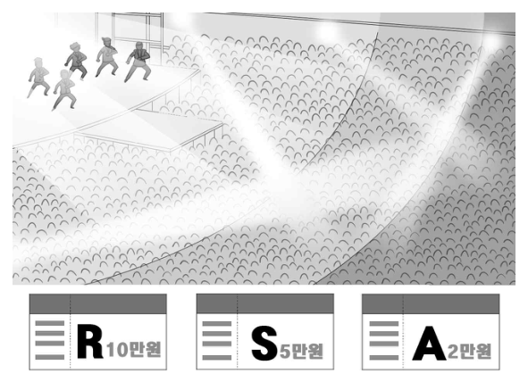

2. 2018년 3월 가형 10번 · 3점 · 고1 범위 · 여러 가지 방정식과 부등식 · G2H-03b#4
원본 (내부용)실수 $x$에 대한 두 조건 $p:(x-1)(x-1-a) \le 0$, $q:-3 <x \le 7$ 에 대하여 $p$가 $q$이기 위한 충분조건이 되도록 하는 자연수 $a$의 개수는? [3점]
① $3$② $4$③ $5$④ $6$⑤ $7$
원본 정답 ④
원본 풀이 (내부용)[출제의도] 충분조건과 이차부등식의 성질을 이용하여 자연수의 개수를 구한다.
두 조건 \(p,q\)의 진리집합을 각각 \(P,Q\)라 하자. \(a\)는 자연수이므로 \(1<1+a\)이다.
\(
P=\{x\mid 1\leq x\leq1+a\},\qquad
Q=\{x\mid -3<x\leq7\}
\)
\(p\)가 \(q\)이기 위한 충분조건이므로 \(P\subset Q\)이어야 한다. 따라서
\(
1+a\leq7,\qquad a\leq6.
\)
자연수 \(a=1,2,3,4,5,6\)이므로 \(a\)의 개수는 6이다.
생성기 숫자판 1/6 · G2H-03b#4실수 $x$에 대한 두 조건 $p$: $\left(x-8\right)\left(x-8-a\right)\le 0$, $q$: $5<x\le 15$에 대하여 $p$가 $q$이기 위한 충분조건이 되도록 하는 자연수 $a$의 개수로 옳은 것을 고르세요.
생성기 숫자판 2/6 · G2H-03b#4실수 $x$에 대한 두 조건 $p$: $\left(x-9\right)\left(x-9-a\right)\le 0$, $q$: $4<x\le 17$에 대하여 $p$가 $q$이기 위한 충분조건이 되도록 하는 자연수 $a$의 개수로 옳은 것을 고르세요.
생성기 숫자판 3/6 · G2H-03b#4실수 $x$에 대한 두 조건 $p$: $\left(x-8\right)\left(x-8-a\right)\le 0$, $q$: $6<x\le 13$에 대하여 $p$가 $q$이기 위한 충분조건이 되도록 하는 자연수 $a$의 개수로 옳은 것을 고르세요.
생성기 숫자판 4/6 · G2H-03b#4실수 $x$에 대한 두 조건 $p$: $\left(x-10\right)\left(x-10-a\right)\le 0$, $q$: $7<x\le 16$에 대하여 $p$가 $q$이기 위한 충분조건이 되도록 하는 자연수 $a$의 개수로 옳은 것을 고르세요.
생성기 숫자판 5/6 · G2H-03b#4실수 $x$에 대한 두 조건 $p$: $\left(x-9\right)\left(x-9-a\right)\le 0$, $q$: $5<x\le 14$에 대하여 $p$가 $q$이기 위한 충분조건이 되도록 하는 자연수 $a$의 개수로 옳은 것을 고르세요.
생성기 숫자판 6/6 · G2H-03b#4실수 $x$에 대한 두 조건 $p$: $\left(x-11\right)\left(x-11-a\right)\le 0$, $q$: $8<x\le 17$에 대하여 $p$가 $q$이기 위한 충분조건이 되도록 하는 자연수 $a$의 개수로 옳은 것을 고르세요.
4. 2018년 3월 가형 14번 · 4점 · 고1 범위 · 여러 가지 방정식과 부등식 · 4점 쌍둥이
원본 (내부용)$x$에 대한 방정식 $(1+x)(1+x^{2} )(1+x^{4} )=x^{7} +x^{6} +x^{5} +x^{4}$ 의 세 근을 각각 $\alpha$, $\beta$, $\gamma$라 할 때, $\alpha^{4} + \beta^{4} + \gamma^{4}$의 값은? [4점]
① $3$② $7$③ $11$④ $15$⑤ $19$
원본 정답 ①
원본 풀이 (내부용)[출제의도] 삼차방정식의 근을 이해하여 식의 값을 구한다.
\(
(1+x)(1+x^2)(1+x^4)=x^7+x^6+x^5+x^4
\)
좌변을 전개하면
\(
1+x+x^2+x^3+x^4+x^5+x^6+x^7.
\)
그러므로
\(
1+x+x^2+x^3=0,
\qquad
(1+x)(1+x^2)=0,
\)
\(
x=-1\quad\text{또는}\quad x^2=-1.
\)
주어진 방정식의 세 근은 \(-1,i,-i\)이므로
\(
\alpha^4+\beta^4+\gamma^4=(-1)^4+i^4+(-i)^4=1+1+1=3.
\)
[다른 풀이]
\(
x^4(x^3+x^2+x+1)=x^4\{x^2(x+1)+x+1\}=x^4(x^2+1)(x+1).
\)
---
## 답안 및 해설
**14번 해설 이어짐**
\(
\begin{aligned}
(1+x)(1+x^2)(1+x^4)&=x^4(1+x)(1+x^2)\\
(1+x)(1+x^2)(1+x^4-x^4)&=0\\
(1+x)(1+x^2)&=0
\end{aligned}
\)
\(
x=-1\quad\text{또는}\quad x^2=-1.
\)
따라서 주어진 방정식의 세 근은 \(-1,i,-i\)이므로
\(
\alpha^4+\beta^4+\gamma^4=1+1+1=3.
\)
쌍둥이 1/5 · 4점 쌍둥이$x$에 대한 방정식 $(1+4x)(1+16x^2)(1+256x^4)=16384x^7+4096x^6+1024x^5+256x^4$의 세 근을 각각 $\alpha$, $\beta$, $\gamma$라 할 때, $\alpha^2+\beta^2+\gamma^2$의 값은? [4점]
① $- \frac{33}{16}$② $- \frac{17}{16}$③ $- \frac{1}{16}$④ $\frac{15}{16}$⑤ $\frac{31}{16}$
쌍둥이 2/5 · 4점 쌍둥이$x$에 대한 방정식 $(1+2x)(1+4x^2)(1+16x^4)=128x^7+64x^6+32x^5+16x^4$의 세 근을 각각 $\alpha$, $\beta$, $\gamma$라 할 때, $\alpha^2+\beta^2+\gamma^2$의 값은? [4점]
① $- \frac{9}{4}$② $- \frac{5}{4}$③ $- \frac{1}{4}$④ $\frac{3}{4}$⑤ $\frac{7}{4}$
쌍둥이 3/5 · 4점 쌍둥이$x$에 대한 방정식 $(1+3x)(1+9x^2)(1+81x^4)=2187x^7+729x^6+243x^5+81x^4$의 세 근을 각각 $\alpha$, $\beta$, $\gamma$라 할 때, $\alpha^2+\beta^2+\gamma^2$의 값은? [4점]
① $- \frac{19}{9}$② $- \frac{10}{9}$③ $- \frac{1}{9}$④ $\frac{8}{9}$⑤ $\frac{17}{9}$
쌍둥이 4/5 · 4점 쌍둥이$x$에 대한 방정식 $(1+5x)(1+25x^2)(1+625x^4)=78125x^7+15625x^6+3125x^5+625x^4$의 세 근을 $\alpha,\beta,\gamma$라 할 때, $\alpha^2+\beta^2+\gamma^2$을 구하시오.
쌍둥이 5/5 · 4점 쌍둥이$x$에 대한 방정식 $(1+6x)(1+36x^2)(1+1296x^4)=279936x^7+46656x^6+7776x^5+1296x^4$의 세 근을 $\alpha,\beta,\gamma$라 할 때, $\alpha^2+\beta^2+\gamma^2$을 구하시오.
5. 2018년 3월 가형 16번 · 4점 · 고1 범위 · 여러 가지 방정식과 부등식 · 4점 쌍둥이
원본 (내부용)두 메뉴 $\mathrm{A}$, $\mathrm{B}$를 판매하는 어느 식당이 있다. 다음은 두 메뉴 $1$인분을 각각 만드는 데 사용되는 두 재료 $\mathrm{S}$, $\mathrm{T}$의 양과 두 메뉴 $1$인분의 판매 가격을 표로 나타낸 것이다. 메뉴 재료 $\mathrm{S}$ 재료 $\mathrm{T}$ 판매 가격 $\mathrm{A}$ $100 \mathrm{g}$ $50g$ $2$만 원 $\mathrm{B}$ $50g$ $150g$ $2$만 $2$천 원 재료 $\mathrm{S}$, 재료 $\mathrm{T}$의 가격은 $10 g$당 각각 $600$원, $400$원이고 이 식당에서 하루에 사용할 수 있는 재료 $\mathrm{S}$와 재료 $\mathrm{T}$의 구입 비용의 합은 최대 $30$만 원이다. 이 식당에서 두 메뉴 $\mathrm{A}$, $\mathrm{B}$를 합하여 하루 최대 $35$인분을 만들 수 있을 때, 하루 동안 두 메뉴 $\mathrm{A}$, $\mathrm{B}$를 판매하여 얻을 수 있는 판매 금액의 최댓값은? [4점]
① $72$만 원② $73$만 원③ $74$만 원④ $75$만 원⑤ $76$만
그림·참고 원 ① $72$만 원 ② $73$만 원 ③ $74$만 원 ④ $75$만 원 ⑤ $76$만 원
원본 정답 ③
원본 풀이 (내부용)[출제의도] 부등식의 영역의 최대·최소를 이용하여 실생활 문제를 해결한다.
두 메뉴 A, B를 각각 \(x\)인분, \(y\)인분 만든다고 하면
\(
x\geq0,\qquad y\geq0.
\)
하루에 최대 35인분을 만들 수 있으므로
\(
x+y\leq35.
\)
재료 S의 가격은 10g당 600원이므로 두 메뉴 A, B 1인분을 만들기 위한 재료 S의 구입 비용은 각각 6000원, 3000원이다. 따라서 하루 동안 사용한 재료 S의 구입 비용은 \(6000x+3000y\)원이다.
재료 T의 가격은 10g당 400원이므로 두 메뉴 A, B 1인분을 만들기 위한 재료 T의 구입 비용은 각각 2000원, 6000원이다. 따라서 하루 동안 사용한 재료 T의 구입 비용은 \(2000x+6000y\)원이다.
하루에 사용할 수 있는 두 재료의 구입 비용은 최대 30만 원이므로
\(
\begin{aligned}
(6000x+3000y)+(2000x+6000y)&\leq300000\\
8000x+9000y&\leq300000\\
8x+9y&\leq300.
\end{aligned}
\)
좌표평면 위에 세 부등식 \(x\geq0,\ y\geq0,\ x+y\leq35\)와 \(8x+9y\leq300\)을 모두 만족시키는 영역을 나타내면 그림과 같이 두 직선 \(x+y=35,\ 8x+9y=300\)과 좌표축으로 둘러싸인 부분이다.
한편, 하루 동안 두 메뉴 A, B를 각각 \(x\)인분, \(y\)인분 판매하여 얻을 수 있는 판매 금액은 \(20000x+22000y\)원이다. \(20000x+22000y=k\) (\(k\)는 양의 실수)라 하면
\(
10x+11y=\frac{k}{2000}.
\)
두 직선 \(x+y=35,\ 8x+9y=300\)의 교점은 \((15,20)\)이고, 따라서 식당에서 두 메뉴 A, B를 판매하여 얻을 수 있는 하루 최대 판매 금액은
\(
20000\times15+22000\times20=740000\text{원}.
\)
쌍둥이 1/5 · 4점 쌍둥이식당에서 메뉴 A 1인분에는 재료 S 50g과 T 50g, 메뉴 B 1인분에는 S 100g과 T 50g이 든다. 10g당 S는 300원, T는 200원이다. 하루 재료 구입비는 최대 19만 5천 원이고, 총 생산량은 60인분 이하이다. A와 B의 판매가는 각각 1만 6천 원, 2만 1천 원일 때 하루 판매액의 최댓값을 만 원 단위로 구하시오.
정답$111$ A, B의 수를 $x,y$라 하면 비용은 $2500x+4000y\le195000$, 생산량은 $x+y\le60$. 교점은 $x+y=60$, $2500x+4000y=195000$에서 $(x,y)=(30,30)$. B로 바꿀 때 비용 증가당 판매액 증가가 양수이므로 이 교점이 최댓값이다. 판매액은 $30(1.6)+30(2.1)=111$만 원이다.
쌍둥이 2/5 · 4점 쌍둥이어느 식당에서 두 메뉴 $\mathrm{A}$, $\mathrm{B}$를 판매합니다. 메뉴 $\mathrm{A}$ $1$인분을 만드는 데 재료 $\mathrm{S}$ $50\,\mathrm{g}$과 재료 $\mathrm{T}$ $100\,\mathrm{g}$이 쓰이고 판매 가격은 1만 5천 원이며, 메뉴 $\mathrm{B}$ $1$인분을 만드는 데 재료 $\mathrm{S}$ $150\,\mathrm{g}$과 재료 $\mathrm{T}$ $50\,\mathrm{g}$이 쓰이고 판매 가격은 2만 1천 원입니다. 재료 $\mathrm{S}$, $\mathrm{T}$의 가격은 $10\,\mathrm{g}$당 각각 $400$원, $300$원이고, 하루에 쓸 수 있는 두 재료의 구입 비용의 합은 최대 $25$만 원입니다. 이 식당에서 두 메뉴를 합하여 하루 최대 $40$인분을 만들 수 있을 때, 하루 동안 두 메뉴를 판매하여 얻을 수 있는 판매 금액의 최댓값은 몇 만 원인지 옳은 것을 고르세요.
① $72$② $73$③ $74$④ $75$⑤ $76$
정답① $72$ 메뉴 $\mathrm{A}$, $\mathrm{B}$를 하루에 각각 $x$인분, $y$인분 만든다고 하면 $1$인분의 재료비는 $\mathrm{A}$가 $5\times400+10\times300=5000$(원), $\mathrm{B}$가 $15\times400+5\times300=7500$(원)입니다 조건은 $x\ge0,\ y\ge0,\ x+y\le40,\ \frac{1}{2}x+\frac{3}{4}y\le25$이고 판매 금액은 $\frac{3}{2}x+\frac{21}{10}y$(만 원)입니다 두 직선 $x+y=40$, $\frac{1}{2}x+\frac{3}{4}y=25$의 교점은 $\left(20,\ 20\right)$입니다 영역의 꼭짓점 $\left(0,\ \frac{100}{3}\right)$, $\left(20,\ 20\right)$, $\left(40,\ 0\right)$에서 판매 금액은 각각 $70$, $72$, $60$(만 원)이므로 최대는 교점 $\left(20,\ 20\right)$이고, 이 점은 정수 순서쌍입니다 따라서 판매 금액의 최댓값은 $72$만 원
쌍둥이 3/5 · 4점 쌍둥이어느 식당에서 두 메뉴 $\mathrm{A}$, $\mathrm{B}$를 판매합니다. 메뉴 $\mathrm{A}$ $1$인분을 만드는 데 재료 $\mathrm{S}$ $200\,\mathrm{g}$과 재료 $\mathrm{T}$ $100\,\mathrm{g}$이 쓰이고 판매 가격은 2만 4천 원이며, 메뉴 $\mathrm{B}$ $1$인분을 만드는 데 재료 $\mathrm{S}$ $100\,\mathrm{g}$과 재료 $\mathrm{T}$ $300\,\mathrm{g}$이 쓰이고 판매 가격은 2만 3천 원입니다. 재료 $\mathrm{S}$, $\mathrm{T}$의 가격은 $10\,\mathrm{g}$당 각각 $500$원, $200$원이고, 하루에 쓸 수 있는 두 재료의 구입 비용의 합은 최대 $34$만 원입니다. 이 식당에서 두 메뉴를 합하여 하루 최대 $30$인분을 만들 수 있을 때, 하루 동안 두 메뉴를 판매하여 얻을 수 있는 판매 금액의 최댓값은 몇 만 원인지 옳은 것을 고르세요.
① $69$② $70$③ $71$④ $72$⑤ $73$
정답② $70$ 메뉴 $\mathrm{A}$, $\mathrm{B}$를 하루에 각각 $x$인분, $y$인분 만든다고 하면 $1$인분의 재료비는 $\mathrm{A}$가 $20\times500+10\times200=12000$(원), $\mathrm{B}$가 $10\times500+30\times200=11000$(원)입니다 조건은 $x\ge0,\ y\ge0,\ x+y\le30,\ \frac{6}{5}x+\frac{11}{10}y\le34$이고 판매 금액은 $\frac{12}{5}x+\frac{23}{10}y$(만 원)입니다 두 직선 $x+y=30$, $\frac{6}{5}x+\frac{11}{10}y=34$의 교점은 $\left(10,\ 20\right)$입니다 영역의 꼭짓점 $\left(0,\ 30\right)$, $\left(10,\ 20\right)$, $\left(\frac{85}{3},\ 0\right)$에서 판매 금액은 각각 $69$, $70$, $68$(만 원)이므로 최대는 교점 $\left(10,\ 20\right)$이고, 이 점은 정수 순서쌍입니다 따라서 판매 금액의 최댓값은 $70$만 원
쌍둥이 4/5 · 4점 쌍둥이어느 식당에서 두 메뉴 $\mathrm{A}$, $\mathrm{B}$를 판매합니다. 메뉴 $\mathrm{A}$ $1$인분을 만드는 데 재료 $\mathrm{S}$ $70\,\mathrm{g}$과 재료 $\mathrm{T}$ $80\,\mathrm{g}$이 쓰이고 판매 가격은 2만 4천 원이며, 메뉴 $\mathrm{B}$ $1$인분을 만드는 데 재료 $\mathrm{S}$ $90\,\mathrm{g}$과 재료 $\mathrm{T}$ $60\,\mathrm{g}$이 쓰이고 판매 가격은 2만 3천 원입니다. 재료 $\mathrm{S}$, $\mathrm{T}$의 가격은 $10\,\mathrm{g}$당 각각 $300$원, $500$원이고, 하루에 쓸 수 있는 두 재료의 구입 비용의 합은 최대 $236000$원입니다. 이 식당에서 두 메뉴를 합하여 하루 최대 $40$인분을 만들 수 있을 때, 하루 동안 두 메뉴를 판매하여 얻을 수 있는 판매 금액의 최댓값은 몇 만 원인지 옳은 것을 고르세요.
① $92$② $93$③ $94$④ $95$⑤ $96$
정답③ $94$ 메뉴 $\mathrm{A}$, $\mathrm{B}$를 하루에 각각 $x$인분, $y$인분 만든다고 하면 $1$인분의 재료비는 $\mathrm{A}$가 $7\times300+8\times500=6100$(원), $\mathrm{B}$가 $9\times300+6\times500=5700$(원)입니다. 조건은 $x\ge0,\ y\ge0,\ x+y\le40,\ 6100x+5700y\le236000$이고 판매 금액은 $2.4x+2.3y$(만 원)입니다. 두 직선 $x+y=40$, $6100x+5700y=236000$의 교점은 $\left(20,\ 20\right)$입니다. 영역의 꼭짓점 $\left(0,\ 40\right)$, $\left(20,\ 20\right)$, $\left(\frac{2360}{61},\ 0\right)$에서 판매 금액은 각각 $92$, $94$, $\frac{5664}{61}$(만 원)입니다. $\frac{5664}{61}<94$이므로 최대는 교점 $\left(20,\ 20\right)$이고, 이 점은 정수 순서쌍입니다. 따라서 판매 금액의 최댓값은 $94$만 원입니다.
쌍둥이 5/5 · 4점 쌍둥이식당에서 메뉴 A 1인분에는 재료 S 40g과 T 80g, 메뉴 B 1인분에는 S 120g과 T 40g이 든다. 10g당 S는 500원, T는 200원이다. 하루 재료 구입비는 최대 22만 8천 원이고, 총 생산량은 50인분 이하이다. A와 B의 판매가는 각각 2만 원, 2만 4천 원일 때 하루 판매액의 최댓값을 만 원 단위로 구하시오.
정답$106$ A, B의 생산량을 $x,y$라 하면 비용 제약은 $3600x+6800y\le228000$, 생산량 제약은 $x+y\le50$이다. 수익 $20000x+24000y$는 B를 A로 바꿀 때 비용이 늘어나는 대신 수익도 늘므로 두 제약이 모두 등호인 꼭짓점에서 최대이다. 연립하면 $(x,y)=(35,15)$. 판매액은 $35(2)+15(2.4)=106$만 원이다.
6. 2018년 3월 가형 26번 · 4점 · 고1 범위 · 여러 가지 방정식과 부등식 · 4점 쌍둥이
원본 (내부용)어느 인기 그룹의 공연을 준비하고 있는 기획사는 다음과 같은 조건으로 총 $1500$장의 티켓을 판매하려고 한다. (가) 티켓의 종류는 $\mathrm{R}$석, $\mathrm{S}$석, $\mathrm{A}$석 세 가지이다. (나)$\mathrm{R}$석, $\mathrm{S}$석, $\mathrm{A}$석 티켓의 가격은 각각 $10$만 원, $5$만 원, $2$만 원이고, $\mathrm{A}$석 티켓의 수는 $\mathrm{R}$석과 $\mathrm{S}$석 티켓의 수의 합과 같다. 티켓 $1500$장을 모두 판매한 금액이 $6000$만 원이 되도록 하기 위해 판매해야 할 $\mathrm{S}$석 티켓의 수를 구하시오. [4점]

원본 정답 600
원본 풀이 (내부용)[출제의도] 연립방정식을 이용하여 실생활 문제를 해결한다.
조건 (가)에서 R석의 티켓 수를 \(a\), S석의 티켓 수를 \(b\), A석의 티켓 수를 \(c\)라 하면
\(
a+b+c=1500\qquad\cdots\cdots\text{①}
\)
조건 (나)에서 R석, S석, A석 티켓의 가격은 각각 10만 원, 5만 원, 2만 원이므로
\(
10a+5b+2c=6000\qquad\cdots\cdots\text{②}
\)
A석의 티켓 수는 R석과 S석 티켓 수의 합과 같으므로
\(
a+b=c\qquad\cdots\cdots\text{③}
\)
세 방정식 ①, ②, ③을 연립하여 풀면 ①, ③에서 \(2c=1500\)이므로 \(c=750\). ①, ②에서 연립방정식
\(
\begin{cases}
a+b=750\\
2a+b=900
\end{cases}
\)
을 풀면 \(a=150,\ b=600\)이다. 따라서 구하는 S석의 티켓 수는 600.
쌍둥이 1/5 · 4점 쌍둥이어느 기획사가 공연 티켓 총 $2400$장을 다음 조건으로 판매하려고 합니다. (가) 티켓은 $\mathrm{R}$석, $\mathrm{S}$석, $\mathrm{A}$석 세 종류입니다. (나) $\mathrm{R}$석, $\mathrm{S}$석, $\mathrm{A}$석 티켓의 가격은 각각 $9$만 원, $7$만 원, $3$만 원이고, $\mathrm{A}$석 티켓의 수는 $\mathrm{R}$석과 $\mathrm{S}$석 티켓의 수의 합과 같습니다. 티켓 $2400$장을 모두 판매한 금액이 $12900$만 원이 되도록 할 때, 판매해야 할 $\mathrm{S}$석 티켓의 수를 구하세요.
정답$750$ $\mathrm{R}$석, $\mathrm{S}$석, $\mathrm{A}$석 티켓의 수를 각각 $x$, $y$, $z$라 하면 $x+y+z=2400$, $z=x+y$이므로 $z=1200$, $x+y=1200$ 판매 금액에서 $9x+7y+3\times1200=12900$, 즉 $9x+7y=9300$ $y=1200-x$를 넣으면 $2x+8400=9300$, $x=450$ 따라서 $y=1200-450=750$
쌍둥이 2/5 · 4점 쌍둥이어느 기획사가 공연 티켓 총 $1800$장을 다음 조건으로 판매하려고 합니다. (가) 티켓은 $\mathrm{R}$석, $\mathrm{S}$석, $\mathrm{A}$석 세 종류입니다. (나) $\mathrm{R}$석, $\mathrm{S}$석, $\mathrm{A}$석 티켓의 가격은 각각 $12$만 원, $6$만 원, $3$만 원이고, $\mathrm{A}$석 티켓의 수는 $\mathrm{R}$석과 $\mathrm{S}$석 티켓의 수의 합과 같습니다. 티켓 $1800$장을 모두 판매한 금액이 $9300$만 원이 되도록 할 때, 판매해야 할 $\mathrm{S}$석 티켓의 수를 구하세요.
정답$700$ $\mathrm{R}$석, $\mathrm{S}$석, $\mathrm{A}$석 티켓의 수를 각각 $x$, $y$, $z$라 하면 $x+y+z=1800$, $z=x+y$이므로 $z=900$, $x+y=900$ 판매 금액에서 $12x+6y+3\times900=9300$, 즉 $12x+6y=6600$ $y=900-x$를 넣으면 $6x+5400=6600$, $x=200$ 따라서 $y=900-200=700$
쌍둥이 3/5 · 4점 쌍둥이어느 기획사가 공연 티켓 총 $1000$장을 다음 조건으로 판매하려고 합니다. (가) 티켓은 $\mathrm{R}$석, $\mathrm{S}$석, $\mathrm{A}$석 세 종류입니다. (나) $\mathrm{R}$석, $\mathrm{S}$석, $\mathrm{A}$석 티켓의 가격은 각각 $8$만 원, $4$만 원, $1$만 원이고, $\mathrm{A}$석 티켓의 수는 $\mathrm{R}$석과 $\mathrm{S}$석 티켓의 수의 합과 같습니다. 티켓 $1000$장을 모두 판매한 금액이 $2980$만 원이 되도록 할 때, 판매해야 할 $\mathrm{S}$석 티켓의 수를 구하세요.
정답$380$ $\mathrm{R}$석, $\mathrm{S}$석, $\mathrm{A}$석 티켓의 수를 각각 $x$, $y$, $z$라 하면 $x+y+z=1000$, $z=x+y$이므로 $z=500$, $x+y=500$ 판매 금액에서 $8x+4y+1\times500=2980$, 즉 $8x+4y=2480$ $y=500-x$를 넣으면 $4x+2000=2480$, $x=120$ 따라서 $y=500-120=380$
7. 2018년 3월 나형 10번 · 3점 · 고1 범위 · 여러 가지 방정식과 부등식 · G2H-02#11
원본 (내부용)연립방정식 $\begin{cases} 3x-y=0 \\ & x^2 +y^2 =90\end{cases}$ 의 해를 $x=a$, $y=b$라 할 때, 두 수 $a$, $b$의 곱 $ab$의 값은? [3점]
① $24$② $27$③ $30$④ $33$⑤ $36$
원본 정답 ②
원본 풀이 (내부용)[출제의도] 연립방정식의 해를 구한다.
연립방정식
\(
\begin{cases}
3x-y=0 \quad\cdots\text{㉠}\\
x^2+y^2=90 \quad\cdots\text{㉡}
\end{cases}
\)
㉠에서 \(3x-y=0\)이므로
\(
y=3x \quad\cdots\text{㉢}
\)
㉢을 ㉡에 대입하면
\(
\begin{aligned}
x^2+(3x)^2&=90\\
10x^2&=90\\
x^2&=9\\
x&=\pm3
\end{aligned}
\)
따라서 연립방정식의 해는
\(
x=3,\ y=9 \quad\text{또는}\quad x=-3,\ y=-9
\)
이므로
\(
a=3,\ b=9\text{일 때}\quad ab=3\times9=27
\)
\(
a=-3,\ b=-9\text{일 때}\quad ab=(-3)\times(-9)=27
\)
두 경우 모두 \(ab=27\).
생성기 숫자판 1/6 · G2H-02#11연립방정식 $\begin{cases}3x-y=3\\9x^{2}+1x-y^{2}=48\end{cases}$의 해를 $x=a$, $y=b$라 할 때, $ab$의 값으로 옳은 것을 고르세요.
① $-18$② $15$③ $16$④ $17$⑤ $18$
정답⑤ $18$ $y=3x-3$을 둘째 식에 대입하면 $9x^{2}+1x-\left(3x-3\right)^{2}=48$ $19x-9=48$이므로 $x=3$, $y=6$ 따라서 $ab=18$
숫자: 원본 3 0 90 → 쌍둥이 3 3 9 1 48 · 같은 수: 3
생성기 숫자판 2/6 · G2H-02#11연립방정식 $\begin{cases}x-2y=3\\x^{2}-4y^{2}=33\end{cases}$의 해를 $x=a$, $y=b$라 할 때, $a+b$의 값으로 옳은 것을 고르세요.
① $-9$② $6$③ $7$④ $8$⑤ $9$
정답⑤ $9$ $x^{2}-4y^{2}=\left(x-2y\right)\left(x+2y\right)=33$이고 $x-2y=3$이므로 $x+2y=11$ 두 식을 연립하면 $x=7$, $y=2$ 따라서 $a+b=9$
숫자: 원본 3 0 90 → 쌍둥이 2 3 4 33 · 같은 수: 3
생성기 숫자판 3/6 · G2H-02#11연립방정식 $\begin{cases}2x-y=3\\4x^{2}+1x-y^{2}=4\end{cases}$의 해를 $x=a$, $y=b$라 할 때, $ab$의 값으로 옳은 것을 고르세요.
① $-1$② $0$③ $1$④ $2$⑤ $3$
정답① $-1$ $y=2x-3$을 둘째 식에 대입하면 $4x^{2}+1x-\left(2x-3\right)^{2}=4$ $13x-9=4$이므로 $x=1$, $y=-1$ 따라서 $ab=-1$
숫자: 원본 3 0 90 → 쌍둥이 2 3 4 1 4 · 같은 수: 3
생성기 숫자판 4/6 · G2H-02#11연립방정식 $\begin{cases}2x-y=3\\4x^{2}+1x-y^{2}=17\end{cases}$의 해를 $x=a$, $y=b$라 할 때, $ab$의 값으로 옳은 것을 고르세요.
① $0$② $1$③ $2$④ $3$⑤ $4$
정답③ $2$ $y=2x-3$을 둘째 식에 대입하면 $4x^{2}+1x-\left(2x-3\right)^{2}=17$ $13x-9=17$이므로 $x=2$, $y=1$ 따라서 $ab=2$
숫자: 원본 3 0 90 → 쌍둥이 2 3 4 1 17 · 같은 수: 3
생성기 숫자판 5/6 · G2H-02#11연립방정식 $\begin{cases}3x-y=3\\9x^{2}-3x-y^{2}=36\end{cases}$의 해를 $x=a$, $y=b$라 할 때, $ab$의 값으로 옳은 것을 고르세요.
① $-18$② $16$③ $17$④ $18$⑤ $19$
정답④ $18$ $y=3x-3$을 둘째 식에 대입하면 $9x^{2}-3x-\left(3x-3\right)^{2}=36$ $15x-9=36$이므로 $x=3$, $y=6$ 따라서 $ab=18$
숫자: 원본 3 0 90 → 쌍둥이 3 3 9 3 36 · 같은 수: 3
생성기 숫자판 6/6 · G2H-02#11연립방정식 $\begin{cases}x-3y=3\\x^{2}-9y^{2}=27\end{cases}$의 해를 $x=a$, $y=b$라 할 때, $a+b$의 값으로 옳은 것을 고르세요.
① $6$② $7$③ $8$④ $9$⑤ $10$
정답② $7$ $x^{2}-9y^{2}=\left(x-3y\right)\left(x+3y\right)=27$이고 $x-3y=3$이므로 $x+3y=9$ 두 식을 연립하면 $x=6$, $y=1$ 따라서 $a+b=7$
숫자: 원본 3 0 90 → 쌍둥이 3 3 9 27 · 같은 수: 3
8. 2018년 3월 나형 19번 · 4점 · 고1 범위 · 여러 가지 방정식과 부등식 · 4점 쌍둥이
원본 (내부용)두 조건 $p$, $q$의 진리집합이 각각 $P= \{ (x,y) | |x |-1 \le y \le 1 \}$, $Q= \{ (x,y) | x^{2} +(y-a)^{2} \le b^2 \}$ 이다. $p$가 $q$이기 위한 필요조건이 되도록 하는 양수 $b$의 최댓값은? (단, $a$는 실수이다.) [4점]
① $\sqrt{2} -1$② $2- \sqrt{2}$③ $2\sqrt{2} -2$④ $4-2\sqrt{2}$⑤ $2\sqrt{2} -1$
원본 정답 ③
원본 풀이 (내부용)[출제의도] 부등식의 영역을 구하여 필요조건 문제를 해결한다.
진리집합 \(P=\{(x,y)\mid |x|-1\leq y\leq1\}\)에서
\(
|x|-1\leq y
\)
는 함수 \(y=|x|-1\)의 그래프와 그 윗부분이므로, 진리집합 \(P\)는 함수 \(y=|x|-1\)의 그래프와 직선 \(y=1\)로 둘러싸인 영역이다.
진리집합 \(P\)를 좌표평면에 나타내면 그림의 색칠된 삼각형과 그 내부가 된다.
진리집합
\(
Q=\{(x,y)\mid x^2+(y-a)^2\leq b^2\}
\)
에서 \(x^2+(y-a)^2=b^2\)는 중심 \((0,a)\), 반지름의 길이가 \(b\)인 원이므로 진리집합 \(Q\)는 중심이 \((0,a)\)이고 반지름의 길이가 \(b\)인 원과 그 내부이다.
\(p\to q\)가 참이 될 필요조건으로 \(P\subset Q\)이다. 즉 원
\(
x^2+(y-a)^2=b^2
\)
이 함수 \(y=|x|-1\)의 그래프와 직선 \(y=1\)로 둘러싸인 영역에 포함되어야 한다.
따라서
\(
-1<a<1
\)
반지름의 길이 \(b\)가 최대가 될 때는 원이 그림과 같이 세 직선
\(
y=x-1,\qquad y=-x-1,\qquad y=1
\)
에 동시에 접할 때이다.
원의 중심 \((0,a)\)와 직선 \(y=x-1\) 사이의 거리는
\(
\frac{|a+1|}{\sqrt2}=\frac{a+1}{\sqrt2}
\)
원의 중심 \((0,a)\)와 직선 \(y=1\) 사이의 거리는
\(
1-a
\)
이고, 이들은 둘 다 원의 반지름의 길이이므로
\(
\frac{a+1}{\sqrt2}=1-a
\)
\(
(a+1)=\sqrt2(1-a)=\sqrt2-\sqrt2a
\)
\(
(\sqrt2+1)a=\sqrt2-1
\)
\(
a=\frac{\sqrt2-1}{\sqrt2+1}
=(\sqrt2-1)^2
=3-2\sqrt2
\)
따라서
\(
b=1-a=2\sqrt2-2
\)
[다른 풀이]
진리집합 \(P\)가 나타내는 영역은 세 점 \((2,1),\ (-2,1),\ (0,-1)\)을 꼭짓점으로 하는 삼각형과 그 내부이다.
반지름의 길이 \(b\)가 최대가 될 때는 원 \(x^2+(y-a)^2=b^2\)가 삼각형에 내접할 때이므로 삼각형의 넓이는
\(
\frac12\times(2\sqrt2+2\sqrt2)\times b
=\frac12\times4\times2
\)
\(
(4\sqrt2+4)b=4
\)
\(
(\sqrt2+1)b=2
\)
\(
b=\frac2{\sqrt2+1}=2(\sqrt2-1)=2\sqrt2-2
\)
쌍둥이 1/5 · 4점 쌍둥이두 조건의 진리집합이 $P=\{(x,y):|x|-2\le y\le5\}$, $Q=\{(x,y):x^2+(y-a)^2\le b^2\}$이다. $q$가 $p$이기 위한 충분조건이 되도록 하는 양수 $b$의 최댓값에서 $b+1$을 구하시오.
정답$7\sqrt2-6$ $Q\subseteq P$이므로 $b=\min(5-a,(a+2)/\sqrt2)$. 두 거리를 같게 하면 $5-a=(a+2)/\sqrt2$, 따라서 $b=7(\sqrt2-1)$. $b+1=7\sqrt2-6$.
숫자: 원본 1 1 → 쌍둥이 2 5 1 · 같은 수: 1
쌍둥이 2/5 · 4점 쌍둥이두 조건 $p$, $q$의 진리집합이 각각 $P=\{(x,\ y)\,|\,|x|-2\le y\le3\}$, $Q=\{(x,\ y)\,|\,x^{2}+(y-a)^{2}\le b^{2}\}$입니다. $p$가 $q$이기 위한 필요조건이 되도록 하는 양수 $b$의 최댓값으로 옳은 것을 고르세요. (단, $a$는 실수입니다.)
① $6-3\sqrt{2}$② $2\sqrt{2}-1$③ $5\sqrt{2}-5$④ $5-2\sqrt{2}$⑤ $3\sqrt{2}-2$
정답③ $5\sqrt{2}-5$ $p$가 $q$이기 위한 필요조건이면 $Q\subset P$이므로 원이 영역 $P$ 안에 들어가야 합니다 $P$는 세 점 $\left(-5,\ 3\right)$, $\left(5,\ 3\right)$, $\left(0,\ -2\right)$을 꼭짓점으로 하는 삼각형(내부 포함)이고, 중심이 $y$축 위에 있는 가장 큰 원은 이 삼각형의 내접원입니다 삼각형의 넓이는 $\frac{1}{2}\times10\times5=25$, 세 변의 길이는 $10$, $5\sqrt{2}$, $5\sqrt{2}$ 내접원의 반지름을 $r$라 하면 $\frac{1}{2}r\left(10+2\times5\sqrt{2}\right)=25$ $r=5\sqrt{2}-5$이므로 $b$의 최댓값은 $5\sqrt{2}-5$
숫자: 원본 1 1 → 쌍둥이 2 3
쌍둥이 3/5 · 4점 쌍둥이두 조건 $p$, $q$의 진리집합이 각각 $P=\{(x,\ y)\,|\,2|x|-1\le y\le3\}$, $Q=\{(x,\ y)\,|\,x^{2}+(y-a)^{2}\le b^{2}\}$입니다. $p$가 $q$이기 위한 필요조건이 되도록 하는 양수 $b$의 최댓값으로 옳은 것을 고르세요. (단, $a$는 실수입니다.)
① $4\sqrt{5}-8$② $-1 + \sqrt{5}$③ $8-3\sqrt{5}$④ $2\sqrt{5}-3$⑤ $6-2\sqrt{5}$
정답$\sqrt{5}-1$ $p$가 $q$이기 위한 필요조건이면 $Q\subset P$이므로 원이 영역 $P$ 안에 들어가야 합니다 $P$는 세 점 $\left(-2,\ 3\right)$, $\left(2,\ 3\right)$, $\left(0,\ -1\right)$을 꼭짓점으로 하는 삼각형(내부 포함)이고, 중심이 $y$축 위에 있는 가장 큰 원은 이 삼각형의 내접원입니다 삼각형의 넓이는 $\frac{1}{2}\times4\times4=8$, 세 변의 길이는 $4$, $2\sqrt{5}$, $2\sqrt{5}$ 내접원의 반지름을 $r$라 하면 $\frac{1}{2}r\left(4+2\times2\sqrt{5}\right)=8$ $r=-1 + \sqrt{5}$이므로 $b$의 최댓값은 $-1 + \sqrt{5}$
숫자: 원본 1 1 → 쌍둥이 2 1 3 · 같은 수: 1
쌍둥이 4/5 · 4점 쌍둥이두 조건 $p$, $q$의 진리집합이 각각 $P=\{(x,\ y)\,|\,3|x|-5\le y\le4\}$, $Q=\{(x,\ y)\,|\,x^{2}+(y-a)^{2}\le b^{2}\}$입니다. $p$가 $q$이기 위한 필요조건이 되도록 하는 양수 $b$의 최댓값으로 옳은 것을 고르세요. (단, $a$는 실수입니다.)
① $8-2\sqrt{10}$② $5 - \sqrt{10}$③ $-1 + \sqrt{10}$④ $2\sqrt{10}-4$⑤ $3\sqrt{10}-7$
정답$\sqrt{10}-1$ $p$가 $q$이기 위한 필요조건이면 $Q\subset P$이므로 원이 영역 $P$ 안에 들어가야 합니다 $P$는 세 점 $\left(-3,\ 4\right)$, $\left(3,\ 4\right)$, $\left(0,\ -5\right)$을 꼭짓점으로 하는 삼각형(내부 포함)이고, 중심이 $y$축 위에 있는 가장 큰 원은 이 삼각형의 내접원입니다 삼각형의 넓이는 $\frac{1}{2}\times6\times9=27$, 세 변의 길이는 $6$, $3\sqrt{10}$, $3\sqrt{10}$ 내접원의 반지름을 $r$라 하면 $\frac{1}{2}r\left(6+2\times3\sqrt{10}\right)=27$ $r=-1 + \sqrt{10}$이므로 $b$의 최댓값은 $-1 + \sqrt{10}$
숫자: 원본 1 1 → 쌍둥이 3 5 4
쌍둥이 5/5 · 4점 쌍둥이두 조건의 진리집합이 $P=\{(x,y):|x|-3\le y\le4\}$, $Q=\{(x,y):x^2+(y-a)^2\le b^2\}$이다. $q$가 $p$이기 위한 충분조건이 되도록 하는 양수 $b$의 최댓값에서 $2b$를 구하시오.
정답$14\sqrt2-14$ $Q\subseteq P$이므로 가능한 반지름은 $b=\min(4-a,(a+3)/\sqrt2)$. 두 거리를 같게 하면 $4-a=(a+3)/\sqrt2$, 따라서 $b=7(\sqrt2-1)$. $2b=14\sqrt2-14$.
숫자: 원본 1 1 → 쌍둥이 3 4 2
9. 2018년 3월 나형 29번 · 4점 · 고1 범위 · 여러 가지 방정식과 부등식 · 4점 쌍둥이
원본 (내부용)어느 상점에서 두 원료 $\mathrm{P}$, $\mathrm{Q}$를 혼합하여 두 향수 $\mathrm{A}$, $\mathrm{B}$를 생산, 판매한다. 두 향수 $\mathrm{A}$, $\mathrm{B}$를 각각 $1$병씩 만드는 데 사용되는 두 원료 $\mathrm{P}$, $\mathrm{Q}$의 양은 다음 표와 같다. 향수 원료 $\mathrm{P}$ 원료 $\mathrm{Q}$ $\mathrm{A}$ $50㎖$ $100㎖$ $\mathrm{B}$ $100㎖$ $50㎖$ 원료 $\mathrm{P}$의 구입 비용은 $100㎖$당 $1$만 원이고 원료 $\mathrm{Q}$의 구입 비용은 $100㎖$당 $2$만 원이다. 한 달에 생산할 수 있는 두 향수 $\mathrm{A}$, $\mathrm{B}$의 병의 개수의 합이 최대 $50$이고, 한 달에 사용할 수 있는 두 원료 $\mathrm{P}$, $\mathrm{Q}$의 총 구입 비용은 최대 $110$만 원이다. 향수 $\mathrm{A}$의 판매 가격은 $1$병당 $a$만 원이고, 향수 $\mathrm{B}$의 판매 가격은 $1$병당 $\frac{9}{10} a$만 원이다. 이 상점에서 두 향수 $\mathrm{A}$, $\mathrm{B}$를 한 달 동안 판매한 금액의 합의 최댓값이 $376$만 원이 되기 위한 $a$의 값을 구하시오. [4점]
원본 정답 8
원본 풀이 (내부용)[출제의도] 부등식의 영역에서의 최대·최소를 이용하여 실생활 문제를 해결한다.
어느 상점에서 두 종류 \(A\)와 \(B\)가 한 달 동안 판매되는 향수병의 개수를 각각 \(x,\ y\)라 하자.
[이어지는 내용은 다음 페이지에 있음.]
---
(29번 해설 이어짐)
향수 \(A\)를 1병 생산하는 데 필요한 원료의 양은 원료 \(P\)가 \(50\text{ ml}\), 원료 \(Q\)가 \(100\text{ ml}\)이고, 향수 \(B\)를 1병 생산하는 데 필요한 원료의 양은 원료 \(P\)가 \(100\text{ ml}\), 원료 \(Q\)가 \(50\text{ ml}\)이다.
향수 \(A\)와 향수 \(B\)를 각각 1병씩 생산하는 데 필요한 원료의 구입 비용은 각각
\(\)
쌍둥이 1/5 · 4점 쌍둥이어느 상점에서 두 원료 $\mathrm{P}$, $\mathrm{Q}$를 섞어 두 향수 $\mathrm{A}$, $\mathrm{B}$를 만들어 판매합니다. 향수 $\mathrm{A}$ $1$병에는 원료 $\mathrm{P}$ $100\,\mathrm{mL}$, 원료 $\mathrm{Q}$ $50\,\mathrm{mL}$가 쓰이고, 향수 $\mathrm{B}$ $1$병에는 원료 $\mathrm{P}$ $50\,\mathrm{mL}$, 원료 $\mathrm{Q}$ $150\,\mathrm{mL}$가 쓰입니다. 원료 $\mathrm{P}$, $\mathrm{Q}$의 구입 비용은 $100\,\mathrm{mL}$당 각각 $2$만 원, $3$만 원입니다. 한 달에 만들 수 있는 두 향수의 병의 개수의 합은 최대 $40$이고, 한 달에 쓸 수 있는 두 원료의 총 구입 비용은 최대 $190$만 원입니다. 향수 $\mathrm{A}$의 판매 가격은 $1$병당 $a$만 원, 향수 $\mathrm{B}$의 판매 가격은 $1$병당 $\frac{6}{5}a$만 원입니다. 두 향수를 한 달 동안 판매한 금액의 합의 최댓값이 $315$만 원이 되도록 하는 $a$의 값을 구하세요.
정답$7$ 향수 $\mathrm{A}$, $\mathrm{B}$를 각각 $x$병, $y$병 만든다고 하면 $1$병의 원료 비용은 $\mathrm{A}$가 $\frac{7}{2}$만 원, $\mathrm{B}$가 $\frac{11}{2}$만 원이므로 $x+y\le40$, $\frac{7}{2}x+\frac{11}{2}y\le190$ $(x\ge0,\ y\ge0)$ 판매 금액은 $ax+\frac{6}{5}ay=a\left(x+\frac{6}{5}y\right)$이므로 $x+\frac{6}{5}y$가 최대일 때를 찾습니다 두 직선 $x+y=40$, $\frac{7}{2}x+\frac{11}{2}y=190$의 교점은 $\left(15,\ 25\right)$이고, 꼭짓점 $\left(0,\ \frac{380}{11}\right)$, $\left(15,\ 25\right)$, $\left(40,\ 0\right)$에서 $x+\frac{6}{5}y$는 각각 $\frac{456}{11}$, $45$, $40$이므로 교점(정수 순서쌍)에서 최대입니다 최댓값은 $45a=315$이므로 $a=7$
쌍둥이 2/5 · 4점 쌍둥이어느 상점에서 두 원료 $\mathrm{P}$, $\mathrm{Q}$를 섞어 두 향수 $\mathrm{A}$, $\mathrm{B}$를 만들어 판매합니다. 향수 $\mathrm{A}$ $1$병에는 원료 $\mathrm{P}$ $150\,\mathrm{mL}$, 원료 $\mathrm{Q}$ $50\,\mathrm{mL}$가 쓰이고, 향수 $\mathrm{B}$ $1$병에는 원료 $\mathrm{P}$ $50\,\mathrm{mL}$, 원료 $\mathrm{Q}$ $100\,\mathrm{mL}$가 쓰입니다. 원료 $\mathrm{P}$, $\mathrm{Q}$의 구입 비용은 $100\,\mathrm{mL}$당 각각 $1$만 원, $3$만 원입니다. 한 달에 만들 수 있는 두 향수의 병의 개수의 합은 최대 $60$이고, 한 달에 쓸 수 있는 두 원료의 총 구입 비용은 최대 $200$만 원입니다. 향수 $\mathrm{A}$의 판매 가격은 $1$병당 $a$만 원, 향수 $\mathrm{B}$의 판매 가격은 $1$병당 $\frac{11}{10}a$만 원입니다. 두 향수를 한 달 동안 판매한 금액의 합의 최댓값이 $320$만 원이 되도록 하는 $a$의 값을 구하세요.
정답$5$ 향수 $\mathrm{A}$, $\mathrm{B}$를 각각 $x$병, $y$병 만든다고 하면 $1$병의 원료 비용은 $\mathrm{A}$가 $3$만 원, $\mathrm{B}$가 $\frac{7}{2}$만 원이므로 $x+y\le60$, $3x+\frac{7}{2}y\le200$ $(x\ge0,\ y\ge0)$ 판매 금액은 $ax+\frac{11}{10}ay=a\left(x+\frac{11}{10}y\right)$이므로 $x+\frac{11}{10}y$가 최대일 때를 찾습니다 두 직선 $x+y=60$, $3x+\frac{7}{2}y=200$의 교점은 $\left(20,\ 40\right)$이고, 꼭짓점 $\left(0,\ \frac{400}{7}\right)$, $\left(20,\ 40\right)$, $\left(60,\ 0\right)$에서 $x+\frac{11}{10}y$는 각각 $\frac{440}{7}$, $64$, $60$이므로 교점(정수 순서쌍)에서 최대입니다 최댓값은 $64a=320$이므로 $a=5$
쌍둥이 3/5 · 4점 쌍둥이어느 상점에서 두 원료 $\mathrm{P}$, $\mathrm{Q}$를 섞어 두 향수 $\mathrm{A}$, $\mathrm{B}$를 만들어 판매합니다. 향수 $\mathrm{A}$ $1$병에는 원료 $\mathrm{P}$ $100\,\mathrm{mL}$, 원료 $\mathrm{Q}$ $100\,\mathrm{mL}$가 쓰이고, 향수 $\mathrm{B}$ $1$병에는 원료 $\mathrm{P}$ $200\,\mathrm{mL}$, 원료 $\mathrm{Q}$ $50\,\mathrm{mL}$가 쓰입니다. 원료 $\mathrm{P}$, $\mathrm{Q}$의 구입 비용은 $100\,\mathrm{mL}$당 각각 $3$만 원, $1$만 원입니다. 한 달에 만들 수 있는 두 향수의 병의 개수의 합은 최대 $30$이고, 한 달에 쓸 수 있는 두 원료의 총 구입 비용은 최대 $170$만 원입니다. 향수 $\mathrm{A}$의 판매 가격은 $1$병당 $a$만 원, 향수 $\mathrm{B}$의 판매 가격은 $1$병당 $\frac{3}{2}a$만 원입니다. 두 향수를 한 달 동안 판매한 금액의 합의 최댓값이 $360$만 원이 되도록 하는 $a$의 값을 구하세요.
정답$9$ 향수 $\mathrm{A}$, $\mathrm{B}$를 각각 $x$병, $y$병 만든다고 하면 $1$병의 원료 비용은 $\mathrm{A}$가 $4$만 원, $\mathrm{B}$가 $\frac{13}{2}$만 원이므로 $x+y\le30$, $4x+\frac{13}{2}y\le170$ $(x\ge0,\ y\ge0)$ 판매 금액은 $ax+\frac{3}{2}ay=a\left(x+\frac{3}{2}y\right)$이므로 $x+\frac{3}{2}y$가 최대일 때를 찾습니다 두 직선 $x+y=30$, $4x+\frac{13}{2}y=170$의 교점은 $\left(10,\ 20\right)$이고, 꼭짓점 $\left(0,\ \frac{340}{13}\right)$, $\left(10,\ 20\right)$, $\left(30,\ 0\right)$에서 $x+\frac{3}{2}y$는 각각 $\frac{510}{13}$, $40$, $30$이므로 교점(정수 순서쌍)에서 최대입니다 최댓값은 $40a=360$이므로 $a=9$
쌍둥이 4/5 · 4점 쌍둥이향수 A는 원료 P 50mL, Q 100mL를 쓰고 향수 B는 P 50mL, Q 300mL를 쓴다. 100mL당 P는 3만 원, Q는 1만 원이다. 월 생산량은 총 50병 이하, 원료비는 175만 원 이하이다. 판매가는 A가 $a$만 원, B가 $\frac65a$만 원이고 판매액 최댓값이 440만 원일 때 $2a+1$을 구하시오.
정답$17$ A,B 생산량을 $x,y$라 하면 $x+y\le50$, 비용 $2.5x+4.5y\le175$. 두 경계의 교점은 $(25,25)$. 매출계수 $x+1.2y$는 B 비중을 늘릴수록 커지므로 이 교점에서 최대이고, 최대 매출은 $55a$. $55a=440$이므로 $a=8$, 따라서 $2a+1=17$.
쌍둥이 5/5 · 4점 쌍둥이향수 A는 원료 P 100mL, Q 100mL를 쓰고 향수 B는 P 100mL, Q 300mL를 쓴다. 100mL당 P는 2만 원, Q는 1만 원이다. 월 생산량은 총 40병 이하, 원료비는 160만 원 이하이다. 판매가는 A가 $a$만 원, B가 $\frac32a$만 원이고 판매액 최댓값이 350만 원일 때 $a+5$를 구하시오.
정답$12$ A,B 생산량을 $x,y$라 하면 $x+y\le40$, 비용 $3x+5y\le160$. 교점은 $(20,20)$. 매출계수 $x+1.5y$는 B 비중이 커질수록 증가하므로 최대는 교점에서 $50a$. $50a=350$에서 $a=7$, 따라서 $a+5=12$.
10. 2018년 6월 가형 16번 · 4점 · 고1 범위 · 여러 가지 방정식과 부등식 · 4점 쌍둥이
원본 (내부용)$1$보다 큰 실수 $a$에 대하여 직선 $x=a$가 두 함수 $y= \frac{1}{x-1}$, $y= -4x$의 그래프와 만나는 점을 각각 $\mathrm{P}$, $\mathrm{Q}$라 하자. 선분 $\mathrm{PQ}$의 길이의 최솟값은? [4점]
① $2$② $4$③ $6$④ $8$⑤ $10$
원본 정답 ④
원본 풀이 (내부용)[출제의도] 절대부등식을 이용하여 도형 문제 해결하기
\(a>1\)이고 두 점 \(P,\ Q\)의 좌표가 각각
\(
\left(a,\frac1{a-1}\right),\quad(a,-4a)
\)
이므로
\(
PQ=\frac1{a-1}+4a
\)
이다.
이때 \(a-1>0\)이므로
\(
\begin{aligned}
4a+\frac1{a-1}
&=4(a-1)+\frac1{a-1}+4\\
&\ge2\sqrt{4(a-1)\times\frac1{a-1}}+4\\
&=4+4=8
\end{aligned}
\)
(단, 등호는 \(a=\frac32\)일 때 성립)
이다. 따라서 선분 \(PQ\)의 길이의 최솟값은 8이다.
쌍둥이 1/5 · 4점 쌍둥이$8$보다 큰 실수 $a$에 대하여 직선 $x=a$가 두 함수 $y=\frac1{x-8}$, $y=-9x$의 그래프와 만나는 점을 각각 $\mathrm P$, $\mathrm Q$라 할 때, 선분 $\mathrm{PQ}$의 길이의 최솟값을 구하세요.
① $70$② $74$③ $78$④ $82$⑤ $86$
정답③ $78$ $\overline{\mathrm{PQ}}=\frac1{a-8}+9a=\frac1{a-8}+9(a-8)+72$ $u=a-8>0$라 두면 $\frac1u+9u\ge2\sqrt9=6$이며 등호는 $u=\frac13$일 때 성립합니다. 따라서 최솟값은 $6+72=78$입니다.
숫자: 원본 1 1 1 4 → 쌍둥이 8 1 8 9 · 같은 수: 1
쌍둥이 2/5 · 4점 쌍둥이$2$보다 큰 실수 $a$에 대하여 직선 $x=a$가 두 함수 $y=\frac{1}{x-2}$, $y=-x$의 그래프와 만나는 점을 각각 $\mathrm{P}$, $\mathrm{Q}$라 할 때, 선분 $\mathrm{PQ}$의 길이의 최솟값으로 옳은 것을 고르세요.
① $4$② $5$③ $6$④ $7$⑤ $8$
정답① $4$ $\overline{\mathrm{PQ}}=\frac{1}{a-2}+a=\frac{1}{a-2}+\left(a-2\right)+2$ $a-2>0$이므로 산술평균과 기하평균의 관계에 의하여 $\frac{1}{a-2}+\left(a-2\right)\ge 2\sqrt{\frac{1}{a-2}\times \left(a-2\right)}=2$ 최솟값은 $2+2=4$
숫자: 원본 1 1 1 4 → 쌍둥이 2 1 2 · 같은 수: 1
쌍둥이 3/5 · 4점 쌍둥이$1$보다 큰 실수 $a$에 대하여 직선 $x=a$가 두 함수 $y=\frac{1}{x-1}$, $y=-9x$의 그래프와 만나는 점을 각각 $\mathrm{P}$, $\mathrm{Q}$라 할 때, 선분 $\mathrm{PQ}$의 길이의 최솟값으로 옳은 것을 고르세요.
① $13$② $14$③ $15$④ $16$⑤ $17$
정답③ $15$ $\overline{\mathrm{PQ}}=\frac{1}{a-1}+9a=\frac{1}{a-1}+9\left(a-1\right)+9$ $a-1>0$이므로 산술평균과 기하평균의 관계에 의하여 $\frac{1}{a-1}+9\left(a-1\right)\ge 2\sqrt{\frac{1}{a-1}\times 9\left(a-1\right)}=6$ 최솟값은 $6+9=15$
숫자: 원본 1 1 1 4 → 쌍둥이 1 1 1 9 · 같은 수: 1
쌍둥이 4/5 · 4점 쌍둥이$2$보다 큰 실수 $a$에 대하여 직선 $x=a$가 함수 $y=\frac{1}{x-2}$, $y=-9x$의 그래프와 만나는 점을 각각 $\mathrm{P}$, $\mathrm{Q}$라 하겠습니다. 선분 $\mathrm{PQ}$의 길이가 최소가 되도록 하는 $a$의 값을 구하세요.
① $2$② $\frac{13}{6}$③ $\frac73$④ $\frac52$⑤ $3$
정답③ $\frac73$ $PQ=\frac1{a-2}+9a=\frac1{a-2}+9(a-2)+18$ $u=a-2>0$라 하면 $\frac1u+9u\ge2\sqrt9=6$ 등호는 $u=\frac13$일 때이므로 $a=2+\frac13=\frac73$
숫자: 원본 1 1 1 4 → 쌍둥이 2 1 2 9 · 같은 수: 1
쌍둥이 5/5 · 4점 쌍둥이$6$보다 큰 실수 $a$에 대하여 직선 $x=a$가 두 함수 $y=\frac1{x-6}$, $y=-9x$의 그래프와 만나는 점을 각각 $\mathrm P$, $\mathrm Q$라 하겠습니다. 선분 $\mathrm{PQ}$의 길이가 최소가 되도록 하는 $a$의 값을 구하세요.
① $5$② $\frac{17}{3}$③ $\frac{19}{3}$④ $\frac{20}{3}$⑤ $7$
정답③ $\frac{19}{3}$ $\overline{\mathrm{PQ}}=\frac1{a-6}+9a=\frac1{a-6}+9(a-6)+54$ $u=a-6>0$라 두면 $\frac1u+9u\ge2\sqrt9=6$이며 등호는 $u=\frac13$일 때 성립합니다. 따라서 길이의 최솟값은 $60$이고, 그때 $a=6+\frac13=\frac{19}{3}$입니다.
숫자: 원본 1 1 1 4 → 쌍둥이 6 1 6 9 · 같은 수: 1
11. 2018년 6월 나형 17번 · 4점 · 고1 범위 · 여러 가지 방정식과 부등식 · 4점 쌍둥이
원본 (내부용)양수 $m$에 대하여 직선 $y=mx+2m+3$이 $x$축, $y$축과 만나는 점을 각각 $\mathrm{A}$, $\mathrm{B}$라 하자. 삼각형 $\mathrm{OAB}$의 넓이의 최솟값은? (단, $\mathrm{O}$는 원점이다.) [4점]
① $8$② $9$③ $10$④ $11$⑤ $12$
원본 정답 ⑤
원본 풀이 (내부용)[출제의도] 절대부등식 문제 해결하기
\(A(a,0),\ B(0,b)\)라 하고 \(a,\ b\)의 값을 구하기 위해 직선의 식에 각각 대입하면
\(
0=ma+2m+3
\quad\text{에서}\quad
a=\frac{-2m-3}{m}=-\frac3m-2<0
\)
\(
b=m\times0+2m+3
\quad\text{에서}\quad
b=2m+3>0
\)
이다. 따라서 삼각형 \(OAB\)의 넓이는
\(
\begin{aligned}
\frac12\left(\frac3m+2\right)(2m+3)
&=\frac12\left(6+\frac9m+4m+6\right)\\
&=\frac12\left(4m+\frac9m+12\right)\\
&\ge\frac12\left(2\sqrt{4m\times\frac9m}+12\right)\\
&=6+6=12
\end{aligned}
\)
이다. (단, 등호는 \(4m=\frac9m\), 즉 \(m=\frac32\)일 때 성립한다.)
따라서 삼각형 \(OAB\)의 넓이의 최솟값은 12이다.
쌍둥이 1/5 · 4점 쌍둥이양수 $m$에 대하여 직선 $y=mx+m+4$가 $x$축, $y$축과 만나는 점을 각각 $\mathrm{A}$, $\mathrm{B}$라 할 때, 삼각형 $\mathrm{OAB}$의 넓이의 최솟값으로 옳은 것을 고르세요. (단, $\mathrm{O}$는 원점입니다.)
① $6$② $7$③ $8$④ $9$⑤ $10$
정답③ $8$ $\mathrm{A}\left(-\frac{m+4}{m},\ 0\right)$, $\mathrm{B}\left(0,\ m+4\right)$ 넓이는 $\frac{\left(m+4\right)^{2}}{2m}=\frac{1}{2}m+4+\frac{16}{2m}$ 산술평균과 기하평균의 관계에 의하여 $\frac{1}{2}m+\frac{16}{2m}\ge 2\sqrt{\frac{1}{2}\times\frac{16}{2}}=4$ 최솟값은 $4+4=8$
숫자: 원본 2 3 → 쌍둥이 4
쌍둥이 2/5 · 4점 쌍둥이양수 $m$에 대하여 직선 $y=mx+3m+5$가 $x$축, $y$축과 만나는 점을 각각 $\mathrm{A}$, $\mathrm{B}$라 할 때, 삼각형 $\mathrm{OAB}$의 넓이의 최솟값으로 옳은 것을 고르세요. (단, $\mathrm{O}$는 원점입니다.)
① $27$② $28$③ $29$④ $30$⑤ $31$
정답④ $30$ $\mathrm{A}\left(-\frac{3m+5}{m},\ 0\right)$, $\mathrm{B}\left(0,\ 3m+5\right)$ 넓이는 $\frac{\left(3m+5\right)^{2}}{2m}=\frac{9}{2}m+15+\frac{25}{2m}$ 산술평균과 기하평균의 관계에 의하여 $\frac{9}{2}m+\frac{25}{2m}\ge 2\sqrt{\frac{9}{2}\times\frac{25}{2}}=15$ 최솟값은 $15+15=30$
숫자: 원본 2 3 → 쌍둥이 3 5 · 같은 수: 3
쌍둥이 3/5 · 4점 쌍둥이양수 $m$에 대하여 직선 $y=mx+5m+7$이 $x$축, $y$축과 만나는 점을 각각 $A$, $B$라 하자. 삼각형 $OAB$의 넓이의 최솟값은? (단, $O$는 원점이다.)
① $66$② $68$③ $70$④ $72$⑤ $74$
정답③ $70$ $|OA|=5+\frac7m$, $|OB|=5m+7$이므로 넓이는 $\frac{(5+7/m)(5m+7)}2=35+\frac{25m+49/m}{2}$입니다. $25m+\frac{49}{m}\ge2\sqrt{25m\cdot\frac{49}{m}}=70$이므로 넓이는 $70$ 이상입니다. 등호는 $25m=49/m$, 즉 $m=\frac75$일 때 성립합니다. 따라서 넓이의 최솟값은 $35+35=70$입니다.
숫자: 원본 2 3 → 쌍둥이 5 7
쌍둥이 4/5 · 4점 쌍둥이양수 $m$에 대하여 직선 $y=mx+4m+3$이 $x$축, $y$축과 만나는 점을 각각 $\mathrm{A}$, $\mathrm{B}$라 할 때, 삼각형 $\mathrm{OAB}$의 넓이가 최소가 되도록 하는 $m$의 값을 구하세요. (단, $\mathrm{O}$는 원점입니다.)
① $\frac12$② $\frac23$③ $\frac34$④ $1$⑤ $\frac43$
정답③ $\frac34$ $|OA|=4+\frac3m$, $|OB|=4m+3$이므로 넓이는 $\frac12(4+\frac3m)(4m+3)=\frac12(16m+24+\frac9m)$ $16m+\frac9m\ge2\sqrt{144}=24$이며 등호는 $16m=\frac9m$, 즉 $m=\frac34$일 때 성립한다.
숫자: 원본 2 3 → 쌍둥이 4 3 · 같은 수: 3
쌍둥이 5/5 · 4점 쌍둥이양수 $m$에 대하여 직선 $y=mx+3m+5$가 $x$축, $y$축과 만나는 점을 각각 $\mathrm{A}$, $\mathrm{B}$라 할 때, 삼각형 $\mathrm{OAB}$의 넓이가 최소가 되도록 하는 $m$에서 $y$축과 만나는 점의 $y$좌표를 구하세요. (단, $\mathrm{O}$는 원점입니다.)
① $8$② $9$③ $10$④ $11$⑤ $12$
정답③ $10$ 넓이는 $\frac12(3+\frac5m)(3m+5)=\frac12(9m+30+\frac{25}{m})$ $9m+\frac{25}{m}$는 $m=\frac53$일 때 최소이다. 그때 $y$절편은 $3m+5=3\cdot\frac53+5=10$
숫자: 원본 2 3 → 쌍둥이 3 5 · 같은 수: 3
12. 2018년 9월 나형 6번 · 3점 · 고1 범위 · 여러 가지 방정식과 부등식 · G2H-02#9
원본 (내부용)양수 $x$에 대하여 $x+ \frac{9}{x}$의 최솟값은? [$3$점]
① $6$② $7$③ $8$④ $9$⑤ $10$
원본 정답 ①
원본 풀이 (내부용)[출제의도] 절대부등식 이해하기
\(
x>0,\quad \frac9x>0
\)
이므로
\(
x+\frac9x\ge 2\sqrt{x\times\frac9x}=6
\)
(단, 등호는 \(x=3\)일 때 성립한다.)
따라서 \(x+\dfrac9x\)의 최솟값은 6
생성기 숫자판 1/6 · G2H-02#9양수 $x$에 대하여 $x+\frac{25}{x}$의 최솟값으로 옳은 것을 고르세요.
① $6$② $7$③ $8$④ $9$⑤ $10$
정답⑤ $10$ $x>0$이므로 산술평균과 기하평균의 관계에 의하여 $x+\frac{25}{x}\ge 2\sqrt{x\times \frac{25}{x}}=10$ (단, 등호는 $x=\frac{25}{x}$일 때 성립) 따라서 최솟값은 $10$
숫자: 원본 9 3 → 쌍둥이 25
생성기 숫자판 2/6 · G2H-02#9양수 $x$에 대하여 $2x+\frac{2}{x}$의 최솟값으로 옳은 것을 고르세요.
① $2$② $3$③ $4$④ $5$⑤ $6$
정답③ $4$ $x>0$이므로 산술평균과 기하평균의 관계에 의하여 $2x+\frac{2}{x}\ge 2\sqrt{2x\times \frac{2}{x}}=4$ (단, 등호는 $2x=\frac{2}{x}$일 때 성립) 따라서 최솟값은 $4$
숫자: 원본 9 3 → 쌍둥이 2 2
생성기 숫자판 3/6 · G2H-02#9양수 $x$에 대하여 $x+\frac{16}{x}$의 최솟값으로 옳은 것을 고르세요.
① $6$② $7$③ $8$④ $9$⑤ $10$
정답③ $8$ $x>0$이므로 산술평균과 기하평균의 관계에 의하여 $x+\frac{16}{x}\ge 2\sqrt{x\times \frac{16}{x}}=8$ (단, 등호는 $x=\frac{16}{x}$일 때 성립) 따라서 최솟값은 $8$
숫자: 원본 9 3 → 쌍둥이 16
생성기 숫자판 4/6 · G2H-02#9양수 $x$에 대하여 $2x+\frac{8}{x}$의 최솟값으로 옳은 것을 고르세요.
① $5$② $6$③ $7$④ $8$⑤ $9$
정답④ $8$ $x>0$이므로 산술평균과 기하평균의 관계에 의하여 $2x+\frac{8}{x}\ge 2\sqrt{2x\times \frac{8}{x}}=8$ (단, 등호는 $2x=\frac{8}{x}$일 때 성립) 따라서 최솟값은 $8$
숫자: 원본 9 3 → 쌍둥이 2 8
생성기 숫자판 5/6 · G2H-02#9양수 $x$에 대하여 $x+\frac{4}{x}$의 최솟값으로 옳은 것을 고르세요.
① $2$② $3$③ $4$④ $5$⑤ $6$
정답③ $4$ $x>0$이므로 산술평균과 기하평균의 관계에 의하여 $x+\frac{4}{x}\ge 2\sqrt{x\times \frac{4}{x}}=4$ (단, 등호는 $x=\frac{4}{x}$일 때 성립) 따라서 최솟값은 $4$
숫자: 원본 9 3 → 쌍둥이 4
생성기 숫자판 6/6 · G2H-02#9양수 $x$에 대하여 $x+\frac{9}{x}$의 최솟값으로 옳은 것을 고르세요.
① $2$② $3$③ $4$④ $5$⑤ $6$
정답⑤ $6$ $x>0$이므로 산술평균과 기하평균의 관계에 의하여 $x+\frac{9}{x}\ge 2\sqrt{x\times \frac{9}{x}}=6$ (단, 등호는 $x=\frac{9}{x}$일 때 성립) 따라서 최솟값은 $6$
숫자: 원본 9 3 → 쌍둥이 9 · 같은 수: 9
13. 2018년 11월 나형 9번 · 3점 · 고1 범위 · 여러 가지 방정식과 부등식 · G2H-02#10
원본 (내부용)\(x>0\)인 실수 \(x\)에 대하여 \( 4x+\frac{a}{x}\quad(a>0) \) 의 최솟값이 2일 때, 상수 \(a\)의 값은? [3점]
① \(\frac14\)② \(\frac12\)③ \(\frac34\)④ 1⑤ \(\frac54\)
원본 정답 ①
원본 풀이 (내부용)[출제의도] 절대부등식 이해하기
\(
4x+\frac ax\geq2\sqrt{4x\times\frac ax}=2\sqrt{4a}=2
\)
(단, 등호는 \(4x=\frac ax\)일 때 성립한다.)
따라서 \(a=\frac14\)
생성기 숫자판 1/6 · G2H-02#10$x>0$인 실수 $x$에 대하여 $2x+\frac{a}{x}$의 최솟값이 $7$일 때, 양수 $a$의 값으로 옳은 것을 고르세요.
① $\frac{49}{8}$② $\frac{53}{8}$③ $\frac{57}{8}$④ $\frac{49}{4}$⑤ $\frac{49}{2}$
생성기 숫자판 1/5 · G2H-02#6이차부등식 $x^{2}-8x+a\le 0$의 해가 $b\le x\le 9$일 때, $a+b$의 값으로 옳은 것을 고르세요. (단, $a$, $b$는 상수입니다.)
① $-13$② $-12$③ $-11$④ $-10$⑤ $-9$
정답④ $-10$ 해가 $-1\le x\le 9$이므로 $x^{2}-8x+a=\left(x+1\right)\left(x-9\right)$ $b=-1$, $a=-1\times 9=-9$ 따라서 $a+b=-10$
숫자: 원본 8 0 6 → 쌍둥이 8 0 9 · 같은 수: 0 8
생성기 숫자판 2/5 · G2H-02#6이차부등식 $x^{2}-2x+a\le 0$의 해가 $b\le x\le 5$일 때, $a+b$의 값으로 옳은 것을 고르세요. (단, $a$, $b$는 상수입니다.)
① $-18$② $-17$③ $-16$④ $-15$⑤ $-14$
정답① $-18$ 해가 $-3\le x\le 5$이므로 $x^{2}-2x+a=\left(x+3\right)\left(x-5\right)$ $b=-3$, $a=-3\times 5=-15$ 따라서 $a+b=-18$
숫자: 원본 8 0 6 → 쌍둥이 2 0 5 · 같은 수: 0
생성기 숫자판 3/5 · G2H-02#6이차부등식 $x^{2}-8x+a\le 0$의 해가 $b\le x\le 7$일 때, $a+b$의 값으로 옳은 것을 고르세요. (단, $a$, $b$는 상수입니다.)
① $6$② $7$③ $8$④ $9$⑤ $10$
정답③ $8$ 해가 $1\le x\le 7$이므로 $x^{2}-8x+a=\left(x-1\right)\left(x-7\right)$ $b=1$, $a=1\times 7=7$ 따라서 $a+b=8$
숫자: 원본 8 0 6 → 쌍둥이 8 0 7 · 같은 수: 0 8
생성기 숫자판 4/5 · G2H-02#6이차부등식 $x^{2}-7x+a\le 0$의 해가 $b\le x\le 6$일 때, $a+b$의 값으로 옳은 것을 고르세요. (단, $a$, $b$는 상수입니다.)
① $6$② $7$③ $8$④ $9$⑤ $11$
정답② $7$ 해가 $1\le x\le 6$이므로 $x^{2}-7x+a=\left(x-1\right)\left(x-6\right)$ $b=1$, $a=1\times 6=6$ 따라서 $a+b=7$
숫자: 원본 8 0 6 → 쌍둥이 7 0 6 · 같은 수: 0 6
생성기 숫자판 5/5 · G2H-02#6이차부등식 $x^{2}-6x+a\le 0$의 해가 $b\le x\le 8$일 때, $a+b$의 값으로 옳은 것을 고르세요. (단, $a$, $b$는 상수입니다.)
① $-20$② $-19$③ $-18$④ $-17$⑤ $-16$
정답③ $-18$ 해가 $-2\le x\le 8$이므로 $x^{2}-6x+a=\left(x+2\right)\left(x-8\right)$ $b=-2$, $a=-2\times 8=-16$ 따라서 $a+b=-18$
숫자: 원본 8 0 6 → 쌍둥이 6 0 8 · 같은 수: 0 6 8
15. 2019년 3월 가형 11번 · 3점 · 고1 범위 · 여러 가지 방정식과 부등식 · G2H-02b#9
원본 (내부용)모든 실수 $x$에 대하여 부등식 $x^{2} -2kx+2k+15\ge 0$ 이 성립하도록 하는 정수 $k$의 개수는? [3점]
① $7$② $9$③ $11$④ $13$⑤ $15$
원본 정답 ②
원본 풀이 (내부용)[출제의도] 판별식을 이용하여 절대부등식이 성립하도록 하는 정수 \(k\)의 개수를 구한다.
이차방정식
\(
x^2-2kx+2k+15=0
\)
의 판별식을 \(D\)라 하자.
모든 실수 \(x\)에 대하여 부등식 \(x^2-2kx+2k+15\geq0\)이 성립하려면 \(D\leq0\)이어야 한다.
\(
\frac D4=(-k)^2-1\times(2k+15)\leq0
\)
\(
k^2-2k-15\leq0
\)
\(
(k-5)(k+3)\leq0
\)
\(
-3\leq k\leq5
\)
따라서 정수 \(k\)는 \(-3,-2,-1,\ldots,5\)이므로 그 개수는 9이다.
생성기 숫자판 1/6 · G2H-02b#9모든 실수 $x$에 대하여 부등식 $x^2-2kx+8k-7\ge 0$이 성립하도록 하는 정수 $k$의 개수로 옳은 것을 고르세요.
① $5$② $6$③ $7$④ $8$⑤ $9$
정답③ $7$ 판별식을 $D$라 하면 $\frac{D}{4}=k^2-(8k-7)\le 0$ $k^2-8k+7\le 0$, $\left(k-(1)\right)\left(k-(7)\right)\le 0$ $1\le k\le 7$이므로 정수 $k$의 개수는 $7$
숫자: 원본 2 2 15 0 → 쌍둥이 2 8 7 0 · 같은 수: 0 2
생성기 숫자판 2/6 · G2H-02b#9모든 실수 $x$에 대하여 부등식 $x^2-2kx+4k+12\ge 0$이 성립하도록 하는 정수 $k$의 개수로 옳은 것을 고르세요.
① $7$② $8$③ $9$④ $10$⑤ $11$
정답③ $9$ 판별식을 $D$라 하면 $\frac{D}{4}=k^2-(4k+12)\le 0$ $k^2-4k-12\le 0$, $\left(k-(-2)\right)\left(k-(6)\right)\le 0$ $-2\le k\le 6$이므로 정수 $k$의 개수는 $9$
숫자: 원본 2 2 15 0 → 쌍둥이 2 4 12 0 · 같은 수: 0 2
생성기 숫자판 3/6 · G2H-02b#9모든 실수 $x$에 대하여 부등식 $x^2-2kx-9k+10\ge 0$이 성립하도록 하는 정수 $k$의 개수로 옳은 것을 고르세요.
① $10$② $11$③ $12$④ $13$⑤ $14$
정답③ $12$ 판별식을 $D$라 하면 $\frac{D}{4}=k^2-(-9k+10)\le 0$ $k^2+9k-10\le 0$, $\left(k-(-10)\right)\left(k-(1)\right)\le 0$ $-10\le k\le 1$이므로 정수 $k$의 개수는 $12$
숫자: 원본 2 2 15 0 → 쌍둥이 2 9 10 0 · 같은 수: 0 2
생성기 숫자판 4/6 · G2H-02b#9모든 실수 $x$에 대하여 부등식 $x^2-2kx+5k+6\ge 0$이 성립하도록 하는 정수 $k$의 개수로 옳은 것을 고르세요.
① $6$② $7$③ $8$④ $9$⑤ $10$
정답③ $8$ 판별식을 $D$라 하면 $\frac{D}{4}=k^2-(5k+6)\le 0$ $k^2-5k-6\le 0$, $\left(k-(-1)\right)\left(k-(6)\right)\le 0$ $-1\le k\le 6$이므로 정수 $k$의 개수는 $8$
숫자: 원본 2 2 15 0 → 쌍둥이 2 5 6 0 · 같은 수: 0 2
생성기 숫자판 5/6 · G2H-02b#9모든 실수 $x$에 대하여 부등식 $x^2-2kx-8k-7\ge 0$이 성립하도록 하는 정수 $k$의 개수로 옳은 것을 고르세요.
① $5$② $6$③ $7$④ $8$⑤ $9$
정답③ $7$ 판별식을 $D$라 하면 $\frac{D}{4}=k^2-(-8k-7)\le 0$ $k^2+8k+7\le 0$, $\left(k-(-7)\right)\left(k-(-1)\right)\le 0$ $-7\le k\le -1$이므로 정수 $k$의 개수는 $7$
숫자: 원본 2 2 15 0 → 쌍둥이 2 8 7 0 · 같은 수: 0 2
생성기 숫자판 6/6 · G2H-02b#9모든 실수 $x$에 대하여 부등식 $x^2-2kx+16k-60\ge 0$이 성립하도록 하는 정수 $k$의 개수로 옳은 것을 고르세요.
① $3$② $4$③ $5$④ $6$⑤ $7$
정답③ $5$ 판별식을 $D$라 하면 $\frac{D}{4}=k^2-(16k-60)\le 0$ $k^2-16k+60\le 0$, $\left(k-(6)\right)\left(k-(10)\right)\le 0$ $6\le k\le 10$이므로 정수 $k$의 개수는 $5$
숫자: 원본 2 2 15 0 → 쌍둥이 2 16 60 0 · 같은 수: 0 2
16. 2019년 3월 나형 11번 · 3점 · 고1 범위 · 여러 가지 방정식과 부등식 · G2H-02#11
원본 (내부용)연립방정식 $\begin{cases}x-2y=1 \\ x^{2} -4y^{2} =5 \end{cases}$ 의 해를 $x=a$, $y=b$라 할 때, $a+b$의 값은? [3점]
18. 2019년 3월 나형 14번 · 4점 · 고1 범위 · 여러 가지 방정식과 부등식 · 4점 쌍둥이
원본 (내부용)복소수 $z=a+bi$($a$, $b$는 실수)가 다음 조건을 만족시킬 때, $a+b$의 값은? (단, $i= \sqrt{-1}$이고, $\overline{z}$는 $z$의 켤레복소수이다.) [4점] (가) $z$는 방정식 $x^{3} -3x^{2} +9x+13=0$의 근이다. (나) $\frac{z- {\overline{z}} }{i}$는 음의 실수이다.
① $-3$② $-1$③ $1$④ $3$⑤ $5$
원본 정답 ②
원본 풀이 (내부용)[출제의도] 삼차방정식의 허근과 관련된 문제를 해결한다.
조건 (가)에서 다항식 \(x^3-3x^2+9x+13\)을 조립제법을 이용하여 인수분해하면
\(
x^3-3x^2+9x+13=(x+1)(x^2-4x+13)
\)
이차방정식 \(x^2-4x+13=0\)에서
\(
x=2\pm3i
\)
또는 \(x=2+3i\) 또는 \(x=2-3i\)
따라서 방정식 \(x^3-3x^2+9x+13=0\)의 세 근은
\(
x=-1\text{ 또는 }x=2+3i\text{ 또는 }x=2-3i
\)
조건 (나)에서
\(
\frac{z-\bar z}{i}
=\frac{(a+bi)-(a-bi)}{i}
=\frac{2bi}{i}=2b
\)
\(\frac{z-\bar z}{i}\)가 음의 실수이므로 \(b\)는 음수이다.
원본 인쇄 쪽수: 2
따라서
\(
z=2-3i
\)
\(
a=2,\quad b=-3
\)
\(
a+b=-1
\)
## 해설
쌍둥이 1/5 · 4점 쌍둥이복소수 $z=a+bi$ ($a$, $b$는 실수)가 다음 조건을 만족시킬 때, $a+b$의 값으로 옳은 것을 고르세요. (단, $i=\sqrt{-1}$이고, $\overline{z}$는 $z$의 켤레복소수입니다.) (가) $z$는 방정식 $x^{3}-7x^{2}+41x-87=0$의 근입니다. (나) $\frac{z-\overline{z}}{i}$는 음의 실수입니다.
① $-7$② $-5$③ $-3$④ $-1$⑤ $1$
정답③ $-3$ $x^{3}-7x^{2}+41x-87=(x-3)\left(x^{2}-4x+29\right)$이므로 근은 $x=3$ 또는 $x=2\pm 5i$ $\frac{z-\overline{z}}{i}=\frac{2bi}{i}=2b$가 음의 실수이므로 $b<0$이고, $z$는 허수입니다 따라서 $z=2-5i$, $a=2$, $b=-5$ $a+b=-3$
숫자: 원본 3 9 13 0 → 쌍둥이 7 41 87 0 · 같은 수: 0
쌍둥이 2/5 · 4점 쌍둥이복소수 $z=a+bi$ ($a$, $b$는 실수)가 다음 조건을 만족시킬 때, $a+b$의 값으로 옳은 것을 고르세요. (단, $i=\sqrt{-1}$이고, $\overline{z}$는 $z$의 켤레복소수입니다.) (가) $z$는 방정식 $x^{3}-4x^{2}-2x+20=0$의 근입니다. (나) $\frac{z-\overline{z}}{i}$는 음의 실수입니다.
① $2$② $4$③ $6$④ $8$⑤ $10$
정답① $2$ $x^{3}-4x^{2}-2x+20=(x+2)\left(x^{2}-6x+10\right)$이므로 근은 $x=-2$ 또는 $x=3\pm i$ $\frac{z-\overline{z}}{i}=\frac{2bi}{i}=2b$가 음의 실수이므로 $b<0$이고, $z$는 허수입니다 따라서 $z=3-i$, $a=3$, $b=-1$ $a+b=2$
숫자: 원본 3 9 13 0 → 쌍둥이 4 2 20 0 · 같은 수: 0
쌍둥이 3/5 · 4점 쌍둥이복소수 $z=a+bi$ ($a$, $b$는 실수)가 다음 조건을 만족시킬 때, $a+b$의 값으로 옳은 것을 고르세요. (단, $i=\sqrt{-1}$이고, $\overline{z}$는 $z$의 켤레복소수입니다.) (가) $z$는 방정식 $x^{3}+x^{2}+15x-17=0$의 근입니다. (나) $\frac{z-\overline{z}}{i}$는 음의 실수입니다.
① $-7$② $-5$③ $-3$④ $-1$⑤ $1$
정답② $-5$ $x^{3}+x^{2}+15x-17=(x-1)\left(x^{2}+2x+17\right)$이므로 근은 $x=1$ 또는 $x=-1\pm 4i$ $\frac{z-\overline{z}}{i}=\frac{2bi}{i}=2b$가 음의 실수이므로 $b<0$이고, $z$는 허수입니다 따라서 $z=-1-4i$, $a=-1$, $b=-4$ $a+b=-5$
숫자: 원본 3 9 13 0 → 쌍둥이 15 17 0 · 같은 수: 0
쌍둥이 4/5 · 4점 쌍둥이복소수 $z=a+bi$ ($a,b$는 실수)가 다음 조건을 만족합니다. (가) $z$는 $x^{3}-4x^{2}+14x-20=0$의 근입니다. (나) $(z-\overline z)/i$는 음의 실수입니다. $a+b$의 값을 구하세요.
① $-4$② $-3$③ $-2$④ $-1$⑤ $0$
정답③ $-2$ 다항식은 $(x-2)((x-1)^2+9)$로 인수분해됩니다. 따라서 근은 $2$, $1+3i$, $1-3i$입니다. 조건 (나)는 $2b<0$이므로 $z=1-3i$입니다. 따라서 $a+b=1-3=-2$입니다.
숫자: 원본 3 9 13 0 → 쌍둥이 4 14 20 0 · 같은 수: 0
쌍둥이 5/5 · 4점 쌍둥이복소수 $z=a+bi$ ($a,b$는 실수)가 다음 조건을 만족합니다. (가) $z$는 $x^{3}-8x^{2}+17x=0$의 근입니다. (나) $(z-\overline z)/i$는 음의 실수입니다. $a+b$의 값을 구하세요.
① $1$② $2$③ $3$④ $4$⑤ $5$
정답③ $3$ 다항식은 $x((x-4)^2+1)$로 인수분해됩니다. 근은 $0$, $4+i$, $4-i$입니다. 조건 (나)는 허수부가 음수인 근을 고르게 하므로 $z=4-i$입니다. 따라서 $a+b=4-1=3$입니다.
숫자: 원본 3 9 13 0 → 쌍둥이 8 17 0 · 같은 수: 0
19. 2020년 3월 3번 · 2점 · 고1 범위 · 여러 가지 방정식과 부등식 · G2H-02#7
원본 (내부용)부등식 $| x-2 | <3$을 만족시키는 정수 $x$의 개수는? [2점]
① $1$② $3$③ $5$④ $7$⑤ $9$
원본 정답 ③
원본 풀이 (내부용)[출제의도] 절댓값 기호를 포함한 일차부등식을 계산한다.
\(
|x-2|<3
\)
에서
\(
-3<x-2<3
\)
각 변에 2를 더하면
\(
-1<x<5
\)
따라서 조건을 만족시키는 정수 \(x\)는 \(0,1,2,3,4\)이고, 그 개수는 5이다.
[다른 풀이]
\(
|x-2|<3
\)
\(
-3<x-2<3
\)
\(
-3<x-2\text{에서 }x>-1\quad\cdots\text{㉠}
\)
\(
x-2<3\text{에서 }x<5\quad\cdots\text{㉡}
\)
㉠, ㉡을 모두 만족시키는 \(x\)의 값의 범위는
\(
-1<x<5
\)
이다. 따라서 조건을 만족시키는 정수 \(x\)는 \(0,1,2,3,4\)이고, 그 개수는 5이다.
그림: 수직선에서 \(-1\)과 \(5\) 사이를 나타내며, 두 끝점은 열린 점이다.
생성기 숫자판 1/6 · G2H-02#7부등식 $\left|x-1\right|<4$를 만족시키는 정수 $x$의 개수로 옳은 것을 고르세요.
① $3$② $4$③ $5$④ $6$⑤ $7$
정답⑤ $7$ $-4<x-1<4$이므로 $-3<x<5$ 정수 $x$는 $-2$부터 $4$까지이므로 개수는 $7$
숫자: 원본 2 3 → 쌍둥이 1 4
생성기 숫자판 2/6 · G2H-02#7부등식 $\left|x-4\right|<8$을 만족시키는 정수 $x$의 개수로 옳은 것을 고르세요.
① $12$② $13$③ $14$④ $15$⑤ $16$
정답④ $15$ $-8<x-4<8$이므로 $-4<x<12$ 정수 $x$는 $-3$부터 $11$까지이므로 개수는 $15$
숫자: 원본 2 3 → 쌍둥이 4 8
생성기 숫자판 3/6 · G2H-02#7부등식 $\left|x-3\right|<6$을 만족시키는 정수 $x$의 개수로 옳은 것을 고르세요.
① $11$② $12$③ $13$④ $14$⑤ $15$
정답① $11$ $-6<x-3<6$이므로 $-3<x<9$ 정수 $x$는 $-2$부터 $8$까지이므로 개수는 $11$
숫자: 원본 2 3 → 쌍둥이 3 6 · 같은 수: 3
생성기 숫자판 4/6 · G2H-02#7부등식 $\left|x-4\right|<9$를 만족시키는 정수 $x$의 개수로 옳은 것을 고르세요.
① $16$② $17$③ $18$④ $19$⑤ $21$
정답② $17$ $-9<x-4<9$이므로 $-5<x<13$ 정수 $x$는 $-4$부터 $12$까지이므로 개수는 $17$
숫자: 원본 2 3 → 쌍둥이 4 9
생성기 숫자판 5/6 · G2H-02#7부등식 $\left|x-1\right|<9$를 만족시키는 정수 $x$의 개수로 옳은 것을 고르세요.
① $17$② $18$③ $19$④ $20$⑤ $21$
정답① $17$ $-9<x-1<9$이므로 $-8<x<10$ 정수 $x$는 $-7$부터 $9$까지이므로 개수는 $17$
숫자: 원본 2 3 → 쌍둥이 1 9
생성기 숫자판 6/6 · G2H-02#7부등식 $\left|x-1\right|<6$을 만족시키는 정수 $x$의 개수로 옳은 것을 고르세요.
① $9$② $10$③ $11$④ $12$⑤ $13$
정답③ $11$ $-6<x-1<6$이므로 $-5<x<7$ 정수 $x$는 $-4$부터 $6$까지이므로 개수는 $11$
숫자: 원본 2 3 → 쌍둥이 1 6
20. 2020년 3월 12번 · 3점 · 고1 범위 · 여러 가지 방정식과 부등식 · G2H-03b#3
원본 (내부용)실수 $x$에 대한 두 조건 $p$, $q$가 다음과 같다. $p:a<x<5$, $q:x^{2} -x-2<0$ $sim p$가 $q$이기 위한 필요조건이 되도록 하는 정수 $a$의 최솟값은? (단, $a<5$) [3점]
① $-2$② $-1$③ $0$④ $1$⑤ $2$
원본 정답 ⑤
원본 풀이 (내부용)[출제의도] 부등식을 이용하여 필요조건이 되도록 하는 문제를 해결한다.
조건 \(p\)의 진리집합을 \(P\)라 하면
\(
P=\{x\mid a<x<5\}
\)
이고 조건 \(\sim p\)의 진리집합은
\(
P^c=\{x\mid x\le a\text{ 또는 }x\ge5\}
\)
이다.
조건 \(q\)의 진리집합을 \(Q\)라 하면
\(
x^2-x-2<0
\)
\(
(x-2)(x+1)<0
\)
\(
-1<x<2
\)
이므로
\(
Q=\{x\mid -1<x<2\}
\)
\(\sim p\)가 \(q\)이기 위한 필요조건이 되려면 \(Q\subset P^c\)이어야 한다. 따라서
\(
2\le a<5
\)
이므로 정수 \(a\)의 최솟값은 2이다.
생성기 숫자판 1/6 · G2H-03b#3실수 $x$에 대한 두 조건 $p$: $a<x<6$, $q$: $x^{2}-5x+4<0$에 대하여 $\sim p$가 $q$이기 위한 필요조건이 되도록 하는 정수 $a$의 최솟값으로 옳은 것을 고르세요. (단, $a<6$)
① $4$② $5$③ $6$④ $7$⑤ $8$
정답① $4$ $q$: $1<x<4$, $\sim p$: $x\le a$ 또는 $x\ge 6$ $\sim p$가 $q$이기 위한 필요조건이려면 $\left\{x\mid 1<x<4\right\}\subset\left\{x\mid x\le a\ \text{또는}\ x\ge 6\right\}$ $4<6$이므로 $a\ge 4$, 정수 $a$의 최솟값은 $4$
숫자: 원본 5 2 0 5 → 쌍둥이 6 5 4 0 6 · 같은 수: 0 5
생성기 숫자판 2/6 · G2H-03b#3실수 $x$에 대한 두 조건 $p$: $a<x<6$, $q$: $x^{2}-6x+5<0$에 대하여 $\sim p$가 $q$이기 위한 필요조건이 되도록 하는 정수 $a$의 최솟값으로 옳은 것을 고르세요. (단, $a<6$)
① $1$② $2$③ $3$④ $4$⑤ $5$
정답⑤ $5$ $q$: $1<x<5$, $\sim p$: $x\le a$ 또는 $x\ge 6$ $\sim p$가 $q$이기 위한 필요조건이려면 $\left\{x\mid 1<x<5\right\}\subset\left\{x\mid x\le a\ \text{또는}\ x\ge 6\right\}$ $5<6$이므로 $a\ge 5$, 정수 $a$의 최솟값은 $5$
숫자: 원본 5 2 0 5 → 쌍둥이 6 6 5 0 6 · 같은 수: 0 5
생성기 숫자판 3/6 · G2H-03b#3실수 $x$에 대한 두 조건 $p$: $a<x<8$, $q$: $x^{2}-6x+5<0$에 대하여 $\sim p$가 $q$이기 위한 필요조건이 되도록 하는 정수 $a$의 최솟값으로 옳은 것을 고르세요. (단, $a<8$)
① $2$② $3$③ $4$④ $5$⑤ $6$
정답④ $5$ $q$: $1<x<5$, $\sim p$: $x\le a$ 또는 $x\ge 8$ $\sim p$가 $q$이기 위한 필요조건이려면 $\left\{x\mid 1<x<5\right\}\subset\left\{x\mid x\le a\ \text{또는}\ x\ge 8\right\}$ $5<8$이므로 $a\ge 5$, 정수 $a$의 최솟값은 $5$
숫자: 원본 5 2 0 5 → 쌍둥이 8 6 5 0 8 · 같은 수: 0 5
생성기 숫자판 4/6 · G2H-03b#3실수 $x$에 대한 두 조건 $p$: $a<x<2$, $q$: $x^{2}+4x+3<0$에 대하여 $\sim p$가 $q$이기 위한 필요조건이 되도록 하는 정수 $a$의 최솟값으로 옳은 것을 고르세요. (단, $a<2$)
① $-3$② $-2$③ $-1$④ $0$⑤ $1$
정답③ $-1$ $q$: $-3<x<-1$, $\sim p$: $x\le a$ 또는 $x\ge 2$ $\sim p$가 $q$이기 위한 필요조건이려면 $\left\{x\mid -3<x<-1\right\}\subset\left\{x\mid x\le a\ \text{또는}\ x\ge 2\right\}$ $-1<2$이므로 $a\ge -1$, 정수 $a$의 최솟값은 $-1$
숫자: 원본 5 2 0 5 → 쌍둥이 2 4 3 0 2 · 같은 수: 0 2
생성기 숫자판 5/6 · G2H-03b#3실수 $x$에 대한 두 조건 $p$: $a<x<1$, $q$: $x^{2}+5x+4<0$에 대하여 $\sim p$가 $q$이기 위한 필요조건이 되도록 하는 정수 $a$의 최솟값으로 옳은 것을 고르세요. (단, $a<1$)
① $-5$② $-4$③ $-3$④ $-2$⑤ $-1$
정답⑤ $-1$ $q$: $-4<x<-1$, $\sim p$: $x\le a$ 또는 $x\ge 1$ $\sim p$가 $q$이기 위한 필요조건이려면 $\left\{x\mid -4<x<-1\right\}\subset\left\{x\mid x\le a\ \text{또는}\ x\ge 1\right\}$ $-1<1$이므로 $a\ge -1$, 정수 $a$의 최솟값은 $-1$
숫자: 원본 5 2 0 5 → 쌍둥이 1 5 4 0 1 · 같은 수: 0 5
생성기 숫자판 6/6 · G2H-03b#3실수 $x$에 대한 두 조건 $p$: $a<x<3$, $q$: $x^{2}+4x+3<0$에 대하여 $\sim p$가 $q$이기 위한 필요조건이 되도록 하는 정수 $a$의 최솟값으로 옳은 것을 고르세요. (단, $a<3$)
① $-3$② $-2$③ $-1$④ $0$⑤ $1$
정답③ $-1$ $q$: $-3<x<-1$, $\sim p$: $x\le a$ 또는 $x\ge 3$ $\sim p$가 $q$이기 위한 필요조건이려면 $\left\{x\mid -3<x<-1\right\}\subset\left\{x\mid x\le a\ \text{또는}\ x\ge 3\right\}$ $-1<3$이므로 $a\ge -1$, 정수 $a$의 최솟값은 $-1$
숫자: 원본 5 2 0 5 → 쌍둥이 3 4 3 0 3 · 같은 수: 0
21. 2020년 3월 13번 · 3점 · 고1 범위 · 여러 가지 방정식과 부등식 · G2H-02b#4
원본 (내부용)연립방정식 $\begin{cases}x^{2} -3xy+2y^{2} =0 \\ x^{2} -y^{2} =9 \end{cases}$ 의 해를 $\begin{cases}x= \alpha_{1 } \\ y= \beta_{1}\end{cases}$ 또는 $\begin{cases}x= \alpha_{2 } \\ y= \beta_{2} \end{cases}$ 라 하자. $\alpha_{1} <\alpha_{2}$일 때, $\beta_{1} -\beta_{2}$의 값은? [3점]
① $-2 \sqrt{3}$② $-2 \sqrt{2}$③ $2 \sqrt{2}$④ $2 \sqrt{3}$⑤ $4$
원본 정답 ①
원본 풀이 (내부용)[출제의도] 인수분해를 이용하여 연립방정식의 해를 구한다.
\(
x^2-3xy+2y^2=0
\)
에서
\(
(x-y)(x-2y)=0
\)
\(
x=y\text{ 또는 }x=2y
\)
\(x=y\)일 때 \(x^2-y^2=y^2-y^2=0\)이므로 \(x^2-y^2=9\)라는 조건을 만족시키지 않는다.
\(x=2y\)일 때
\(
x^2-y^2=(2y)^2-y^2=3y^2=9
\)
\(
y=\sqrt3\text{ 또는 }y=-\sqrt3
\)
\(y=\sqrt3\)이면 \(x=2\sqrt3\), \(y=-\sqrt3\)이면 \(x=-2\sqrt3\)이다.
\(\alpha_1<\alpha_2\)이므로
\(
\alpha_1=-2\sqrt3,\quad\beta_1=-\sqrt3
\)
\(
\alpha_2=2\sqrt3,\quad\beta_2=\sqrt3
\)
따라서
\(
\beta_1-\beta_2=-\sqrt3-\sqrt3=-2\sqrt3
\)
생성기 숫자판 1/6 · G2H-02b#4연립방정식 $\begin{cases}x^{2}-5xy+4y^{2}=0\\x^{2}-y^{2}=15\end{cases}$의 해를 $x=\alpha_{1}$, $y=\beta_{1}$ 또는 $x=\alpha_{2}$, $y=\beta_{2}$라 할 때, $\alpha_{1}<\alpha_{2}$이면 $\alpha_{1}-\alpha_{2}$의 값으로 옳은 것을 고르세요.
① $-16$② $-9$③ $-8$④ $-7$⑤ $-4$
정답③ $-8$ $\left(x-y\right)\left(x-4y\right)=0$에서 $x=y$ 또는 $x=4y$ $x=y$이면 $x^{2}-y^{2}=0\ne 15$이므로 해가 없습니다. $x=4y$이면 $15y^{2}=15$, $y=\pm 1$ 해는 $x=-4$, $y=-1$ 또는 $x=4$, $y=1$이고 $\alpha_1<\alpha_2$이므로 $\alpha_1-\alpha_2=-8$
생성기 숫자판 2/6 · G2H-02b#4연립방정식 $\begin{cases}x^{2}-5xy+4y^{2}=0\\x^{2}-y^{2}=60\end{cases}$의 해를 $x=\alpha_{1}$, $y=\beta_{1}$ 또는 $x=\alpha_{2}$, $y=\beta_{2}$라 할 때, $\alpha_{1}<\alpha_{2}$이면 $\alpha_{1}-\alpha_{2}$의 값으로 옳은 것을 고르세요.
① $-32$② $-17$③ $-16$④ $-15$⑤ $-8$
정답③ $-16$ $\left(x-y\right)\left(x-4y\right)=0$에서 $x=y$ 또는 $x=4y$ $x=y$이면 $x^{2}-y^{2}=0\ne 60$이므로 해가 없습니다. $x=4y$이면 $15y^{2}=60$, $y=\pm 2$ 해는 $x=-8$, $y=-2$ 또는 $x=8$, $y=2$이고 $\alpha_1<\alpha_2$이므로 $\alpha_1-\alpha_2=-16$
생성기 숫자판 3/6 · G2H-02b#4연립방정식 $\begin{cases}x^{2}-5xy+4y^{2}=0\\x^{2}-y^{2}=135\end{cases}$의 해를 $x=\alpha_{1}$, $y=\beta_{1}$ 또는 $x=\alpha_{2}$, $y=\beta_{2}$라 할 때, $\alpha_{1}<\alpha_{2}$이면 $\alpha_{1}-\alpha_{2}$의 값으로 옳은 것을 고르세요.
① $-48$② $-25$③ $-24$④ $-23$⑤ $-12$
정답③ $-24$ $\left(x-y\right)\left(x-4y\right)=0$에서 $x=y$ 또는 $x=4y$ $x=y$이면 $x^{2}-y^{2}=0\ne 135$이므로 해가 없습니다. $x=4y$이면 $15y^{2}=135$, $y=\pm 3$ 해는 $x=-12$, $y=-3$ 또는 $x=12$, $y=3$이고 $\alpha_1<\alpha_2$이므로 $\alpha_1-\alpha_2=-24$
생성기 숫자판 4/6 · G2H-02b#4연립방정식 $\begin{cases}x^{2}-5xy+4y^{2}=0\\x^{2}-y^{2}=240\end{cases}$의 해를 $x=\alpha_{1}$, $y=\beta_{1}$ 또는 $x=\alpha_{2}$, $y=\beta_{2}$라 할 때, $\alpha_{1}<\alpha_{2}$이면 $\alpha_{1}-\alpha_{2}$의 값으로 옳은 것을 고르세요.
① $-64$② $-33$③ $-32$④ $-31$⑤ $-16$
정답③ $-32$ $\left(x-y\right)\left(x-4y\right)=0$에서 $x=y$ 또는 $x=4y$ $x=y$이면 $x^{2}-y^{2}=0\ne 240$이므로 해가 없습니다. $x=4y$이면 $15y^{2}=240$, $y=\pm 4$ 해는 $x=-16$, $y=-4$ 또는 $x=16$, $y=4$이고 $\alpha_1<\alpha_2$이므로 $\alpha_1-\alpha_2=-32$
생성기 숫자판 5/6 · G2H-02b#4연립방정식 $\begin{cases}x^{2}-5xy+4y^{2}=0\\x^{2}-y^{2}=375\end{cases}$의 해를 $x=\alpha_{1}$, $y=\beta_{1}$ 또는 $x=\alpha_{2}$, $y=\beta_{2}$라 할 때, $\alpha_{1}<\alpha_{2}$이면 $\alpha_{1}-\alpha_{2}$의 값으로 옳은 것을 고르세요.
① $-80$② $-41$③ $-40$④ $-39$⑤ $-20$
정답③ $-40$ $\left(x-y\right)\left(x-4y\right)=0$에서 $x=y$ 또는 $x=4y$ $x=y$이면 $x^{2}-y^{2}=0\ne 375$이므로 해가 없습니다. $x=4y$이면 $15y^{2}=375$, $y=\pm 5$ 해는 $x=-20$, $y=-5$ 또는 $x=20$, $y=5$이고 $\alpha_1<\alpha_2$이므로 $\alpha_1-\alpha_2=-40$
생성기 숫자판 6/6 · G2H-02b#4연립방정식 $\begin{cases}x^{2}-4xy+3y^{2}=0\\x^{2}-y^{2}=32\end{cases}$의 해를 $x=\alpha_{1}$, $y=\beta_{1}$ 또는 $x=\alpha_{2}$, $y=\beta_{2}$라 할 때, $\alpha_{1}<\alpha_{2}$이면 $\beta_{1}-\beta_{2}$의 값으로 옳은 것을 고르세요.
① $-4$② $-2$③ $0$④ $2$⑤ $4$
정답① $-4$ $\left(x-y\right)\left(x-3y\right)=0$에서 $x=y$ 또는 $x=3y$ $x=y$이면 $x^{2}-y^{2}=0\ne 32$이므로 해가 없습니다. $x=3y$이면 $8y^{2}=32$, $y=\pm 2$ 해는 $x=-6$, $y=-2$ 또는 $x=6$, $y=2$이고 $\alpha_{1}<\alpha_{2}$이므로 $\beta_{1}-\beta_{2}=-4$
22. 2020년 3월 20번 · 4점 · 고1 범위 · 여러 가지 방정식과 부등식 · 4점 쌍둥이
원본 (내부용)$x$에 대한 사차방정식 $x^{4} + ( 3-2a ) x^{2} +a^{2} -3a-10=0$ 이 실근과 허근을 모두 가질 때, 이 사차방정식에 대하여 <보기>에서 옳은 것만을 있는 대로 고른 것은? (단, $a$는 실수이다.) [4점] < 보 기 > ㄱ. $a=1$이면 모든 실근의 곱은 $-3$이다. ㄴ. 모든 실근의 곱이 $-4$이면 모든 허근의 곱은 $3$이다. ㄷ.정수인 근을 갖도록 하는 모든 실수 $a$의 값의 합은 $-1$이다.
① ㄱ② ㄱ, ㄴ③ ㄱ, ㄷ④ ㄴ, ㄷ⑤ ㄱ, ㄴ, ㄷ
원본 정답 ⑤
원본 풀이 (내부용)[출제의도] 이수분해를 이용하여 사차방정식의 근을 추론한다.
ㄱ. \(x^4+(3-2a)x^2+a^2-3a-10=0\)에서 \(a=1\)이면
\(
x^4+x^2-12=0
\)
\(
(x^2-3)(x^2+4)=0
\)
\(
(x+\sqrt3)(x-\sqrt3)(x+2i)(x-2i)=0
\)
이때 실근은 \(x=-\sqrt3\) 또는 \(x=\sqrt3\)이고 허근은 \(x=-2i\) 또는 \(x=2i\)이다. 모든 실근의 곱은
\(
(-\sqrt3)\times\sqrt3=-3
\)
이다. (참)
ㄴ. \(x^4+(3-2a)x^2+a^2-3a-10=0\)에서
\(
x^4+(3-2a)x^2+(a-5)(a+2)=0
\)
\(
(x^2-a+5)(x^2-a-2)=0
\)
\(
x^2=a-5\text{ 또는 }x^2=a+2
\)
이다.
\(x^2=a-5\)에서 \(a-5\ge0\)이면 실근을 갖고, \(a-5<0\)이면 허근을 갖는다.
\(x^2=a+2\)에서 \(a+2\ge0\)이면 실근을 갖고, \(a+2<0\)이면 허근을 갖는다.
방정식이 실근과 허근을 모두 가지므로
\(
a+2\ge0,\quad a-5<0
\)
에서
\(
-2\le a<5
\)
이다. \(-2<a<5\)일 때 방정식의 실근은
\(
x=-\sqrt{a+2}\text{ 또는 }x=\sqrt{a+2}
\)
이고, 모든 실근의 곱은 \(-4\)이므로
\(
(-\sqrt{a+2})\times\sqrt{a+2}=-4
\)
\(
a+2=4,\quad a=2
\)
이므로 방정식의 허근은
\(
x=-\sqrt3i\text{ 또는 }x=\sqrt3i
\)
이다. 따라서 모든 허근의 곱은
\(
(-\sqrt3i)\times\sqrt3i=3
\)
이다. (참)
ㄷ. ㄴ에서 \(-2\le a<5\)일 때
\(
0\le\sqrt{a+2}<\sqrt7
\)
이므로 방정식이 가질 수 있는 정수근은 \(\sqrt{a+2}\)의 값이 \(0,1,2\)일 때이다. 즉,
\(
\sqrt{a+2}=0\text{일 때 }a=-2
\)
\(
\sqrt{a+2}=1\text{일 때 }a=-1
\)
\(
\sqrt{a+2}=2\text{일 때 }a=2
\)
따라서 정수인 근을 갖도록 하는 실수 \(a\)의 값은 \(-2,-1,2\)이고 그 합은
\(
(-2)+(-1)+2=-1
\)
이다. (참)
이상에서 옳은 것은 ㄱ, ㄴ, ㄷ이다.
쌍둥이 1/5 · 4점 쌍둥이정수 $a$가 $1\le a\le 12$를 만족시킨다. 방정식 $x^4+(4a-28)x^2-5a^2+40a-60=0$이 서로 다른 두 실근과 두 허근을 가질 때, 가능한 $a$의 개수를 구하세요.
① $4$② $5$③ $6$④ $7$⑤ $8$
정답③ $6$ $t=x^2$라 두면 $t^2+(4a-28)t-5a^2+40a-60=(t-a+2)(t+5a-30)=0$입니다. 따라서 $x^2=a-2$ 또는 $x^2=30-5a$입니다. 서로 다른 두 실근과 두 허근을 가지려면 첫 값은 양수, 둘째 값은 음수여야 하므로 $a>2$와 $a>6$을 함께 만족해야 합니다. $1\le a\le 12$인 정수 중 조건을 만족하는 것은 $7,8,\ldots,12$이며, 그 개수는 $12-6=6$입니다.
쌍둥이 2/5 · 4점 쌍둥이정수 $a$가 $1\le a\le 11$을 만족시킨다. 방정식 $x^4+(4a-28)x^2-5a^2+40a-60=0$이 서로 다른 두 실근과 두 허근을 가질 때, 가능한 $a$의 개수를 구하세요.
① $3$② $4$③ $5$④ $6$⑤ $7$
정답③ $5$ $t=x^2$라 두면 $t^2+(4a-28)t-5a^2+40a-60=(t-a+2)(t+5a-30)=0$입니다. 따라서 $x^2=a-2$ 또는 $x^2=30-5a$입니다. 서로 다른 두 실근과 두 허근을 가지려면 첫 값은 양수, 둘째 값은 음수여야 하므로 $a>2$와 $a>6$을 함께 만족해야 합니다. $1\le a\le 11$인 정수 중 조건을 만족하는 것은 $7,8,\ldots,11$이며, 그 개수는 $11-6=5$입니다.
쌍둥이 3/5 · 4점 쌍둥이정수 $a$가 $1\le a\le 13$을 만족시킨다. 방정식 $x^4+(4a-28)x^2-5a^2+40a-60=0$이 서로 다른 두 실근과 두 허근을 가질 때, 가능한 $a$의 개수를 구하세요.
① $5$② $6$③ $7$④ $8$⑤ $9$
정답③ $7$ $t=x^2$라 두면 $t^2+(4a-28)t-5a^2+40a-60=(t-a+2)(t+5a-30)=0$입니다. 따라서 $x^2=a-2$ 또는 $x^2=30-5a$입니다. 서로 다른 두 실근과 두 허근을 가지려면 첫 값은 양수, 둘째 값은 음수여야 하므로 $a>2$와 $a>6$을 함께 만족해야 합니다. $1\le a\le 13$인 정수 중 조건을 만족하는 것은 $7,8,\ldots,13$이며, 그 개수는 $13-6=7$입니다.
쌍둥이 4/5 · 4점 쌍둥이정수 $a$가 $1\le a\le 14$를 만족시킨다. 방정식 $x^4+(4a-28)x^2-5a^2+40a-60=0$이 서로 다른 두 실근과 두 허근을 가질 때, 가능한 $a$의 개수를 구하세요.
① $6$② $7$③ $8$④ $9$⑤ $10$
정답③ $8$ $t=x^2$라 두면 $t^2+(4a-28)t-5a^2+40a-60=(t-a+2)(t+5a-30)=0$입니다. 따라서 $x^2=a-2$ 또는 $x^2=30-5a$입니다. 서로 다른 두 실근과 두 허근을 가지려면 첫 값은 양수, 둘째 값은 음수여야 하므로 $a>2$와 $a>6$을 함께 만족해야 합니다. $1\le a\le 14$인 정수 중 조건을 만족하는 것은 $7,8,\ldots,14$이며, 그 개수는 $14-6=8$입니다.
쌍둥이 5/5 · 4점 쌍둥이정수 $a$가 $1\le a\le 15$를 만족시킨다. 방정식 $x^4+(4a-28)x^2-5a^2+40a-60=0$이 서로 다른 두 실근과 두 허근을 가질 때, 가능한 $a$의 개수를 구하세요.
① $7$② $8$③ $9$④ $10$⑤ $11$
정답③ $9$ $t=x^2$라 두면 $t^2+(4a-28)t-5a^2+40a-60=(t-a+2)(t+5a-30)=0$입니다. 따라서 $x^2=a-2$ 또는 $x^2=30-5a$입니다. 서로 다른 두 실근과 두 허근을 가지려면 첫 값은 양수, 둘째 값은 음수여야 하므로 $a>2$와 $a>6$을 함께 만족해야 합니다. $1\le a\le 15$인 정수 중 조건을 만족하는 것은 $7,8,\ldots,15$이며, 그 개수는 $15-6=9$입니다.
생성기 숫자판 1/6 · G2H-02#11연립방정식 $\begin{cases}3x-y=1\\9x^{2}-2x-y^{2}=15\end{cases}$의 해를 $x=a$, $y=b$라 할 때, $ab$의 값으로 옳은 것을 고르세요.
① $-44$② $41$③ $42$④ $43$⑤ $44$
정답⑤ $44$ $y=3x-1$을 둘째 식에 대입하면 $9x^{2}-2x-\left(3x-1\right)^{2}=15$ $4x-1=15$이므로 $x=4$, $y=11$ 따라서 $ab=44$
숫자: 원본 2 1 4 5 → 쌍둥이 3 1 9 2 15 · 같은 수: 1 2
생성기 숫자판 2/6 · G2H-02#11연립방정식 $\begin{cases}2x-y=1\\4x^{2}+2x-y^{2}=23\end{cases}$의 해를 $x=a$, $y=b$라 할 때, $ab$의 값으로 옳은 것을 고르세요.
① $-28$② $25$③ $26$④ $27$⑤ $28$
정답⑤ $28$ $y=2x-1$을 둘째 식에 대입하면 $4x^{2}+2x-\left(2x-1\right)^{2}=23$ $6x-1=23$이므로 $x=4$, $y=7$ 따라서 $ab=28$
숫자: 원본 2 1 4 5 → 쌍둥이 2 1 4 2 23 · 같은 수: 1 2 4
생성기 숫자판 3/6 · G2H-02#11연립방정식 $\begin{cases}2x-y=2\\4x^{2}+1x-y^{2}=14\end{cases}$의 해를 $x=a$, $y=b$라 할 때, $ab$의 값으로 옳은 것을 고르세요.
① $-4$② $1$③ $2$④ $3$⑤ $4$
정답⑤ $4$ $y=2x-2$를 둘째 식에 대입하면 $4x^{2}+1x-\left(2x-2\right)^{2}=14$ $9x-4=14$이므로 $x=2$, $y=2$ 따라서 $ab=4$
숫자: 원본 2 1 4 5 → 쌍둥이 2 2 4 1 14 · 같은 수: 1 2 4
생성기 숫자판 4/6 · G2H-02#11연립방정식 $\begin{cases}3x-y=3\\9x^{2}-2x-y^{2}=55\end{cases}$의 해를 $x=a$, $y=b$라 할 때, $ab$의 값으로 옳은 것을 고르세요.
① $35$② $36$③ $37$④ $38$⑤ $39$
정답② $36$ $y=3x-3$을 둘째 식에 대입하면 $9x^{2}-2x-\left(3x-3\right)^{2}=55$ $16x-9=55$이므로 $x=4$, $y=9$ 따라서 $ab=36$
숫자: 원본 2 1 4 5 → 쌍둥이 3 3 9 2 55 · 같은 수: 2
생성기 숫자판 5/6 · G2H-02#11연립방정식 $\begin{cases}3x-y=2\\9x^{2}+2x-y^{2}=38\end{cases}$의 해를 $x=a$, $y=b$라 할 때, $ab$의 값으로 옳은 것을 고르세요.
① $20$② $21$③ $22$④ $23$⑤ $24$
정답② $21$ $y=3x-2$를 둘째 식에 대입하면 $9x^{2}+2x-\left(3x-2\right)^{2}=38$ $14x-4=38$이므로 $x=3$, $y=7$ 따라서 $ab=21$
숫자: 원본 2 1 4 5 → 쌍둥이 3 2 9 2 38 · 같은 수: 2
생성기 숫자판 6/6 · G2H-02#11연립방정식 $\begin{cases}2x-y=2\\4x^{2}+2x-y^{2}=16\end{cases}$의 해를 $x=a$, $y=b$라 할 때, $ab$의 값으로 옳은 것을 고르세요.
① $-4$② $1$③ $2$④ $3$⑤ $4$
정답⑤ $4$ $y=2x-2$를 둘째 식에 대입하면 $4x^{2}+2x-\left(2x-2\right)^{2}=16$ $10x-4=16$이므로 $x=2$, $y=2$ 따라서 $ab=4$
숫자: 원본 2 1 4 5 → 쌍둥이 2 2 4 2 16 · 같은 수: 2 4
24. 2021년 3월 14번 · 4점 · 고1 범위 · 여러 가지 방정식과 부등식 · 4점 쌍둥이
원본 (내부용)실수 $x$에 대한 두 조건 $p$, $q$가 다음과 같다. $p$: $x^{2} -4x-12=0$, $q$: $| x-3 | >k$ $p$가 $\sim q$이기 위한 충분조건이 되도록 하는 자연수 $k$의 최솟값은? [4점]
① $3$② $4$③ $5$④ $6$⑤ $7$
원본 정답 ③
원본 풀이 (내부용)[출제의도] 방정식과 부등식을 이용하여 충분조건에 관한 문제를 해결한다.
조건 \(p\)의 진리집합을 \(P\)라 하면
\(
x^2-4x-12=0
\)
에서
\(
(x+2)(x-6)=0
\)
\(
x=-2\text{ 또는 }x=6
\)
이므로
\(
P=\{-2,6\}
\)
조건 \(q\)의 진리집합을 \(Q\)라 하면 조건 \(q\)에 대하여
\(
\sim q:\ |x-3|\le k
\)
이고 \(k\)는 자연수이므로
\(
-k\le x-3\le k
\)
\(
3-k\le x\le3+k
\)
즉,
\(
Q^c=\{x\mid 3-k\le x\le3+k\}
\)
이때 \(p\)가 \(\sim q\)이기 위한 충분조건이 되려면 \(P\subset Q^c\)이어야 한다.
그림은 수직선에 \(3-k,\ -2,\ 6,\ 3+k\)를 표시하고, \([3-k,3+k]\) 구간을 나타낸다.
즉,
\(
3-k\le-2\quad\text{이고}\quad 6\le3+k
\)
\(
k\ge5\quad\text{이고}\quad k\ge3
\)
이므로 자연수 \(k\)의 최솟값은 5이다.
쌍둥이 1/5 · 4점 쌍둥이실수 $x$에 대한 두 조건 $p$: $x^{2}-x-6=0$, $q$: $\left|x-4\right|>k$에 대하여 $p$가 $\sim q$이기 위한 충분조건이 되도록 하는 자연수 $k$의 최솟값으로 옳은 것을 고르세요.
쌍둥이 4/5 · 4점 쌍둥이실수 $x$에 대한 두 조건 $p$: $x^2-7x+12=0$, $q$: $|x-1|>k$에서 $p$가 $\sim q$의 충분조건이 되도록 하는 자연수 $k$의 최솟값을 $k_0$라 하겠습니다. 방정식 $p$의 두 근 중 $1$에서 더 먼 근의 값을 구하세요.
① $2$② $3$③ $4$④ $5$⑤ $6$
정답③ $4$ $p$의 근은 $3,4$이고, $\sim q$는 $|x-1|\le k$이다. 두 근이 $\sim q$를 만족하려면 $k\ge\max(2,3)=3$이므로 $k_0=3$ $1$에서 더 먼 근은 $4$
숫자: 원본 4 12 0 3 → 쌍둥이 7 12 0 1 0 1 · 같은 수: 0 12
쌍둥이 5/5 · 4점 쌍둥이실수 $x$에 대한 두 조건 $p$: $x^2-5x+4=0$, $q$: $|x-2|>k$에서 $p$가 $\sim q$의 충분조건이 되도록 하는 자연수 $k$의 최솟값을 $k_0$라 하겠습니다. 방정식 $p$의 두 근 중 $2$에서 더 먼 근의 값을 구하세요.
① $1$② $2$③ $3$④ $4$⑤ $5$
정답④ $4$ $p$의 근은 $1,4$이고, $\sim q$는 $|x-2|\le k$이다. 두 근에서 $2$까지의 거리는 각각 $1,2$이므로 $k_0=2$ $2$에서 더 먼 근은 $4$
숫자: 원본 4 12 0 3 → 쌍둥이 5 4 0 2 0 2 · 같은 수: 0 4
25. 2021년 3월 17번 · 4점 · 고1 범위 · 여러 가지 방정식과 부등식 · 4점 쌍둥이
원본 (내부용)$a<0$일 때, $x$에 대한 연립부등식 $\begin{cases} ( x-a )^{2} <a^{2} \\ x^{2} +a< ( a+1 ) x \end{cases}$ 의 해가 $b<x<b+1$이다. $a+b$의 값은? (단, $a$, $b$는 상수이다.) [4점]
① $2$② $1$③ $0$④ $-1$⑤ $-2$
원본 정답 ⑤
원본 풀이 (내부용)[출제의도] 연립부등식을 이해하여 해를 구한다.
\(a<0\)이므로
\(
(x-a)^2<a^2
\)
에서
\(
x^2-2ax+a^2<a^2
\)
\(
x(x-2a)<0
\)
\(
2a<x<0\qquad\cdots\cdots\text{①}
\)
\(
x^2+a<(a+1)x
\)
에서
\(
x^2-(a+1)x+a<0
\)
\(
(x-1)(x-a)<0
\)
\(
a<x<1\qquad\cdots\cdots\text{②}
\)
①, ②를 모두 만족시키는 \(x\)의 값의 범위는
\(
a<x<0
\)
주어진 연립부등식의 해가 \(b<x<b+1\)이므로
\(
a=b,\quad b+1=0
\)
에서
\(
a=-1,\quad b=-1
\)
따라서
\(
a+b=(-1)+(-1)=-2
\)
그림은 수직선 위에 \(2a,\ a,\ 0,\ 1\)을 표시한다. \(2a\)에서 \(0\)까지의 구간과 \(a\)에서 \(1\)까지의 구간이 겹치는 범위가 \(a<x<0\)으로 표시되어 있다.
쌍둥이 1/5 · 4점 쌍둥이$a<0$일 때, $x$에 대한 연립부등식 $\begin{cases}(x-a)^{2}<9a^{2}\\ x^{2}+7a<(a+7)x\end{cases}$의 해가 $b<x<b+9$입니다. $a+b$의 값으로 옳은 것을 고르세요. (단, $a$, $b$는 상수입니다.)
① $-8$② $-7$③ $-6$④ $-5$⑤ $-4$
정답③ $-6$ $(x-a)^{2}<9a^{2}$에서 $|x-a|<3|a|$이고 $a<0$이므로 $|a|=-a$, 즉 $4a<x<-2a$ $x^{2}-(a+7)x+7a<0$에서 $(x-a)(x-7)<0$이고 $a<0<7$이므로 $a<x<7$ $4a<a$이므로 두 부등식을 동시에 만족시키는 $x$의 범위는 $a<x<-2a$와 $a<x<7$ 중 오른쪽 끝이 작은 쪽입니다. (ⅰ) $-2a\le7$이면 해는 $a<x<-2a$이고 길이가 $-3a=9$이므로 $a=-3$입니다. 이때 $-2a=6\le7$이므로 조건에 맞습니다. (ⅱ) $-2a>7$이면 해는 $a<x<7$이고 길이가 $7-a=9$에서 $a=-2$인데, 이때 $4>7$이 아니므로 맞지 않습니다. 따라서 $a=-3$, $b=a=-3$이고 $a+b=-6$
숫자: 원본 0 1 1 → 쌍둥이 0 9 7 7 9 · 같은 수: 0
쌍둥이 2/5 · 4점 쌍둥이$a<0$일 때, $x$에 대한 연립부등식 $\begin{cases}(x-a)^{2}<4a^{2}\\ x^{2}+5a<(a+5)x\end{cases}$의 해가 $b<x<b+4$입니다. $a+b$의 값으로 옳은 것을 고르세요. (단, $a$, $b$는 상수입니다.)
① $-5$② $-4$③ $-3$④ $-2$⑤ $-1$
정답② $-4$ $(x-a)^{2}<4a^{2}$에서 $|x-a|<2|a|$이고 $a<0$이므로 $|a|=-a$, 즉 $3a<x<-a$ $x^{2}-(a+5)x+5a<0$에서 $(x-a)(x-5)<0$이고 $a<0<5$이므로 $a<x<5$ $3a<a$이므로 두 부등식을 동시에 만족시키는 $x$의 범위는 $a<x<-a$와 $a<x<5$ 중 오른쪽 끝이 작은 쪽입니다. (ⅰ) $-a\le5$이면 해는 $a<x<-a$이고 길이가 $-2a=4$이므로 $a=-2$입니다. 이때 $-a=2\le5$이므로 조건에 맞습니다. (ⅱ) $-a>5$이면 해는 $a<x<5$이고 길이가 $5-a=4$에서 $a=1$인데, $a<0$이 아니므로 맞지 않습니다. 따라서 $a=-2$, $b=a=-2$이고 $a+b=-4$
숫자: 원본 0 1 1 → 쌍둥이 0 4 5 5 4 · 같은 수: 0
쌍둥이 3/5 · 4점 쌍둥이$a<0$일 때, $x$에 대한 연립부등식 $\begin{cases}(x-a)^{2}<16a^{2}\\ x^{2}+9a<(a+9)x\end{cases}$의 해가 $b<x<b+10$입니다. $a+b$의 값으로 옳은 것을 고르세요. (단, $a$, $b$는 상수입니다.)
① $-8$② $-7$③ $-6$④ $-5$⑤ $-4$
정답④ $-5$ $(x-a)^{2}<16a^{2}$에서 $|x-a|<4|a|$이고 $a<0$이므로 $|a|=-a$, 즉 $5a<x<-3a$ $x^{2}-(a+9)x+9a<0$에서 $(x-a)(x-9)<0$이고 $a<0<9$이므로 $a<x<9$ $5a<a$이므로 두 부등식을 동시에 만족시키는 $x$의 범위는 $a<x<-3a$와 $a<x<9$ 중 오른쪽 끝이 작은 쪽입니다. (ⅰ) $-3a\le9$이면 해는 $a<x<-3a$이고 길이가 $-4a=10$이므로 $a=-\frac{5}{2}$입니다. 이때 $-3a=\frac{15}{2}\le9$이므로 조건에 맞습니다. (ⅱ) $-3a>9$이면 해는 $a<x<9$이고 길이가 $9-a=10$에서 $a=-1$인데, 이때 $3>9$가 아니므로 맞지 않습니다. 따라서 $a=-\frac{5}{2}$, $b=a=-\frac{5}{2}$이고 $a+b=-5$
숫자: 원본 0 1 1 → 쌍둥이 0 16 9 9 10 · 같은 수: 0
쌍둥이 4/5 · 4점 쌍둥이a<0일 때 연립부등식 $(x-a)^2<4a^2$, $x^2+5a<(a+5)x$의 해가 b<x<b+6입니다. a+b는?
① $-8$② $-7$③ $-6$④ $-5$⑤ $-4$
정답③ $-6$ 첫 부등식은 3a<x<−a, 둘째는 a<x<5이다. 교집합은 a<x<−a 또는 a<x<5 중 더 작은 상한이다. 구간 길이가 6이 되려면 −a<5이고 −2a=6이므로 a=−3, b=−3이다. a+b=−6이다.
숫자: 원본 0 1 1 → 쌍둥이 0 4 5 5 6 · 같은 수: 0
쌍둥이 5/5 · 4점 쌍둥이a<0일 때 같은 연립부등식의 해가 b<x<b+2입니다. a+b는?
① $-4$② $-3$③ $-2$④ $-1$⑤ $0$
정답③ $-2$ 해 구간은 (a,min(−a,5))이다. 길이 2에서 가능한 경우는 −a<5이고 −2a=2이다. 따라서 a=−1, b=−1이며 a+b=−2이다.
숫자: 원본 0 1 1 → 쌍둥이 0 2 · 같은 수: 0
26. 2021년 3월 26번 · 4점 · 고1 범위 · 여러 가지 방정식과 부등식 · 4점 쌍둥이
원본 (내부용)삼차방정식 $x^{3} -5x^{2} + ( a+4 ) x-a=0$ 의 서로 다른 실근의 개수가 $2$가 되도록 하는 모든 실수 $a$의 값의 합을 구하시오. [4점]
원본 정답 7
원본 풀이 (내부용)[출제의도] 인수분해를 이해하여 조건을 만족시키는 삼차방정식을 구한다.
방정식
\(
x^3-5x^2+(a+4)x-a=0
\)
에 \(x=1\)을 대입하면 등식이 성립하므로 조립제법을 이용하여 인수분해하면
\(
\begin{array}{r|rrrr}
1 & 1 & -5 & a+4 & -a\\
& & 1 & -4 & a\\ \hline
& 1 & -4 & a & 0
\end{array}
\)
\(
x^3-5x^2+(a+4)x-a=0
\)
\(
(x-1)(x^2-4x+a)=0
\)
에서
\(
x=1\quad\text{또는}\quad x^2-4x+a=0
\)
이때 주어진 삼차방정식의 서로 다른 실근의 개수가 2인 경우는 다음과 같다.
(i) \(x^2-4x+a=0\)이 1을 근으로 가지고 1이 아닌 실근을 갖는 경우
\(
x^2-4x+a=0
\)
이 1을 근으로 가지므로
\(
1-4+a=0
\)
\(
a=3
\)
이때
\(
x^2-4x+3=(x-1)(x-3)=0
\)
에서 \(x=1\) 또는 \(x=3\).
즉, 삼차방정식의 실근은 \(x=1\)(중근) 또는 \(x=3\)이므로 \(a=3\)은 주어진 조건을 만족시킨다.
(ii) \(x^2-4x+a=0\)이 1이 아닌 중근을 갖는 경우
이차방정식 \(x^2-4x+a=0\)의 판별식을 \(D\)라 할 때 \(D=0\)이어야 하므로
\(
\frac D4=(-2)^2-1\times a=0
\)
\(
a=4
\)
이때
\(
x^2-4x+4=(x-2)^2=0
\)
에서 \(x=2\).
즉, 삼차방정식의 실근은 \(x=1\) 또는 \(x=2\)(중근)이므로 \(a=4\)는 주어진 조건을 만족시킨다.
(i), (ii)에서 구하는 모든 실수 \(a\)의 값의 합은
\(
3+4=7
\)
쌍둥이 1/5 · 4점 쌍둥이삼차방정식 $x^{3}-8x^{2}+(a + 12)x-2 a=0$의 서로 다른 실근의 개수가 $2$가 되도록 하는 모든 실수 $a$의 값의 합을 구하세요.
쌍둥이 4/5 · 4점 쌍둥이방정식 $(x-1)(x^2-4x+a)=0$의 서로 다른 실근의 개수가 2가 되도록 하는 모든 실수 a의 합은?
① $5$② $6$③ $7$④ $8$⑤ $9$
정답③ $7$ 이차식이 x=1을 근으로 가지면 a=3이고 다른 근은 3이어서 서로 다른 근은 1,3이다. 이차식이 중근을 가지면 판별식 16−4a=0에서 a=4이며 중근은 2로 x=1과 다르다. 다른 경우에는 근 집합에 1과 서로 다른 두 실근이 생기므로 조건을 만족하는 a는 3,4뿐이다. 합은 7이다.
숫자: 원본 5 4 0 2 → 쌍둥이 1 4 0 2 · 같은 수: 0 2 4
쌍둥이 5/5 · 4점 쌍둥이방정식 $(x-3)(x^2-8x+a)=0$의 서로 다른 실근의 개수가 2가 되도록 하는 모든 실수 a의 합은?
① $27$② $29$③ $31$④ $33$⑤ $35$
정답③ $31$ 이차식이 x=3을 근으로 가지면 a=15이고 다른 근은 5이므로 전체 서로 다른 근은 3,5이다. 이차식이 중근이면 판별식 64−4a=0에서 a=16이고 중근은 4로 3과 다르다. 따라서 가능한 a는 15,16이고 합은 31이다.
숫자: 원본 5 4 0 2 → 쌍둥이 3 8 0 2 · 같은 수: 0 2
27. 2022년 3월 15번 · 4점 · 고1 범위 · 여러 가지 방정식과 부등식 · 4점 쌍둥이
원본 (내부용)연립부등식 \( \begin{cases} |x-k|\leq 5\\ x^2-x-12>0 \end{cases} \) 을 만족시키는 모든 정수 \(x\)의 값의 합이 7이 되도록 하는 정수 \(k\)의 값은? [4점]
① \(-2\)② \(-1\)③ \(0\)④ \(1\)⑤ \(2\)
원본 정답 ④
원본 풀이 (내부용)[출제의도] 연립부등식을 이해하여 조건을 만족시키는 미지수를 구한다.
\(
|x-k|\leq5\text{에서 }-5\leq x-k\leq5
\)
\(
k-5\leq x\leq k+5\quad\cdots\text{㉠}
\)
\(
x^2-x-12>0\text{에서 }(x+3)(x-4)>0
\)
\(
x<-3\text{ 또는 }x>4\quad\cdots\text{㉡}
\)
**(i) \(k+5\leq4\), 즉 \(k\leq-1\)일 때**
㉠, ㉡을 모두 만족시키는 정수 \(x\)는 모두 \(-3\)보다 작으므로 합은 7보다 작게 되어 조건을 만족시키지 않는다.
**(ii) \(k-5<-3\)이고 \(k+5>4\), 즉 \(-1<k<2\)일 때**
\(k=0\)이면 ㉠, ㉡을 모두 만족시키는 정수 \(x\)는 \(-5,-4,5\)이고 그 합은 \(-4\)가 되어 조건을 만족시키지 않는다.
\(k=1\)이면 ㉠, ㉡을 모두 만족시키는 정수 \(x\)는 \(-4,5,6\)이고 그 합은 7이 되어 조건을 만족시킨다.
**(iii) \(k-5\geq-3\), 즉 \(k\geq2\)일 때**
㉠, ㉡을 모두 만족시키는 정수 \(x\)는 두 개 이상이고 모두 4보다 크므로 그 합은 7보다 크게 되어 조건을 만족시킨다.
(i), (ii), (iii)에서 \(k=1\)이다.
**
쌍둥이 1/5 · 4점 쌍둥이연립부등식 $\begin{cases}|x-1|\le3\\x^2-4x-5>0\end{cases}$을 만족시키는 모든 정수 $x$의 개수를 구하세요.
① $0$② $1$③ $2$④ $3$⑤ $4$
정답② $1$ $|x-1|\le3$에서 $-2\le x\le4$ $x^2-4x-5=(x+1)(x-5)>0$에서 $x<-1$ 또는 $x>5$ 두 조건을 만족하는 정수는 $x=-2$뿐이므로 개수는 $1$
숫자: 원본 5 12 0 7 → 쌍둥이 1 3 4 5 0 · 같은 수: 0 5
쌍둥이 2/5 · 4점 쌍둥이연립부등식 $\begin{cases}\left|x-k\right|\le 4\\x^{2}-x-6>0\end{cases}$을 만족시키는 모든 정수 $x$의 값의 합이 $15$가 되도록 하는 정수 $k$의 값으로 옳은 것을 고르세요.
① $1$② $2$③ $3$④ $4$⑤ $5$
정답② $2$ $\left|x-k\right|\le 4$에서 $k-4\le x\le k+4$, $x^{2}-x-6>0$에서 $x<-2$ 또는 $x>3$ 정수 $k$에 따라 합을 조사하면 $k=2$일 때 범위는 $-2\le x\le 6$이고 조건을 만족시키는 정수는 $4$, $5$, $6$으로 합이 $15$ $k=1$이면 합이 $6$, $k=3$이면 합이 $22$이고 $k$가 이보다 멀어지면 합이 더 크게 달라지므로 $k=2$
숫자: 원본 5 12 0 7 → 쌍둥이 4 6 0 15 · 같은 수: 0
쌍둥이 3/5 · 4점 쌍둥이연립부등식 $\begin{cases}\left|x-k\right|\le 5\\x^{2}+x-6>0\end{cases}$을 만족시키는 모든 정수 $x$의 값의 합이 $-8$이 되도록 하는 정수 $k$의 값으로 옳은 것을 고르세요.
① $-5$② $-4$③ $-3$④ $-2$⑤ $-1$
정답⑤ $-1$ $\left|x-k\right|\le 5$에서 $k-5\le x\le k+5$, $x^{2}+x-6>0$에서 $x<-3$ 또는 $x>2$ 정수 $k$에 따라 합을 조사하면 $k=-1$일 때 범위는 $-6\le x\le 4$이고 조건을 만족시키는 정수는 $-6$, $-5$, $-4$, $3$, $4$로 합이 $-8$ $k=-2$이면 합이 $-19$, $k=0$이면 합이 $3$이고 $k$가 이보다 멀어지면 합이 더 크게 달라지므로 $k=-1$
숫자: 원본 5 12 0 7 → 쌍둥이 5 6 0 8 · 같은 수: 0 5
쌍둥이 4/5 · 4점 쌍둥이연립부등식 $\begin{cases}\left|x-k\right|\le 6\\x^{2}-16>0\end{cases}$을 만족시키는 모든 정수 $x$의 값의 합이 $26$이 되도록 하는 정수 $k$의 값으로 옳은 것을 고르세요.
① $2$② $3$③ $4$④ $5$⑤ $6$
정답① $2$ $\left|x-k\right|\le 6$에서 $k-6\le x\le k+6$, $x^{2}-16>0$에서 $x<-4$ 또는 $x>4$ 정수 $k$에 따라 합을 조사하면 $k=2$일 때 범위는 $-4\le x\le 8$이고 조건을 만족시키는 정수는 $5$, $6$, $7$, $8$로 합이 $26$ $k=1$이면 합이 $13$, $k=3$이면 합이 $35$이고 $k$가 이보다 멀어지면 합이 더 크게 달라지므로 $k=2$
숫자: 원본 5 12 0 7 → 쌍둥이 6 16 0 26 · 같은 수: 0
쌍둥이 5/5 · 4점 쌍둥이연립부등식 $\begin{cases}|x+2|\le5\\x^2-9>0\end{cases}$을 만족시키는 모든 정수 $x$의 값의 합을 구하세요.
28. 2022년 3월 16번 · 4점 · 고1 범위 · 여러 가지 방정식과 부등식 · 4점 쌍둥이
원본 (내부용)삼차방정식 \(x^3-x^2-kx+k=0\)의 세 근을 \(\alpha,\ \beta,\ \gamma\)라 하자. \(\alpha,\ \beta\) 중 실수는 하나뿐이고 \(\alpha^2=-2\beta\)일 때, \(\beta^2+\gamma^2\)의 값은? (단, \(k\)는 0이 아닌 실수이다.) [4점]
① \(-5\)② \(-4\)③ \(-3\)④ \(-2\)⑤ \(-1\)
원본 정답 ⑤
원본 풀이 (내부용)[출제의도] 삼차방정식의 근에 대한 조건을 이용하여 문제를 해결한다.
\(
x^3-x^2-kx+k=0\text{에서}
\)
\(
x^2(x-1)-k(x-1)=0
\)
\(
(x-1)(x^2-k)=0
\)
\(
x=1\text{ 또는 }x^2=k
\)
0이 아닌 실수 \(k\)에 대하여 주어진 방정식의 모든 근이 실수이므로 \(\alpha,\beta\) 중 실수는 하나뿐이라는 조건을 만족시키지 않는다.
\(k<0\)이면 주어진 방정식의 실근은 \(x=1\)뿐이므로, \(\alpha,\beta\) 중에서 실수가 존재하므로 \(\alpha=1\) 또는 \(\beta=1\)이다.
**(i) \(\alpha=1\)일 때**
\(
\alpha^2=-2\text{에서 }\beta=-\frac12\alpha^2=-\frac12
\)
이므로 \(\alpha,\beta\) 중 실수는 하나뿐이라는 조건을 만족시키지 않는다.
**(ii) \(\beta=1\)일 때**
\(
\alpha^2=-2
\)
이때 \(\alpha,\gamma\)는 방정식 \(x^2=k\)의 근이므로
\(
k=\alpha^2=-2,\quad \gamma^2=k=-2
\)
(i), (ii)에서 \(\beta=1,\ \alpha^2=-2\).
따라서
\(
\beta^2+\gamma^2=1^2+(-2)=-1
\)
**[참고 그림]** 집합 \(X\)의 원소 1, 2, 3, 4, 5가 집합 \(X\)의 원소 1, 2, 3, 4, 5로 대응되는 화살표 그림이 있다.
쌍둥이 1/5 · 4점 쌍둥이삼차방정식 $x^{3}-6x^{2}-kx+6k=0$의 세 근을 $\alpha$, $\beta$, $\gamma$라 합니다. $\alpha$, $\beta$ 중 실수는 하나뿐이고 $\alpha^{2}=-8\beta$일 때, $\alpha\beta+\beta\gamma+\gamma\alpha$의 값은? (단, $k$는 $0$이 아닌 실수입니다.)
① $40$② $44$③ $48$④ $52$⑤ $56$
정답③ $48$ 방정식은 $(x-6)(x^{2}-k)=0$으로 인수분해된다. $k>0$이면 세 근이 모두 실수이므로 조건에 맞지 않아 $k<0$이다. 따라서 유일한 실근은 $6$이고, $\alpha$는 $\pm i\sqrt{-k}$, $\beta=6$이다. $\alpha^{2}=k=-8\beta=-48$이므로 $k=-48$이다. 세 근의 두 근씩 곱한 합은 삼차방정식의 계수에 따라 $-k$이므로 $\alpha\beta+\beta\gamma+\gamma\alpha=48$이다.
숫자: 원본 0 2 0 → 쌍둥이 6 6 0 8 0 · 같은 수: 0
쌍둥이 2/5 · 4점 쌍둥이삼차방정식 $x^{3}-2x^{2}-kx+2k=0$의 세 근을 $\alpha$, $\beta$, $\gamma$라 합니다. $\alpha$, $\beta$ 중 실수는 하나뿐이고 $\alpha^{2}=-3\beta$일 때, $\beta^{2}+\gamma^{2}$의 값으로 옳은 것을 고르세요. (단, $k$는 $0$이 아닌 실수입니다.)
① $-2$② $-1$③ $0$④ $1$⑤ $2$
정답① $-2$ $x^{3}-2x^{2}-kx+2k=(x-2)(x^{2}-k)$이므로 세 근은 $2$와 $x^{2}=k$의 두 근입니다. $\alpha$, $\beta$ 중 하나만 실수이므로 $k<0$이고 $x^{2}=k$의 두 근은 허수입니다. $\alpha=2$이면 $\beta=-\frac{4}{3}$가 실수가 되어 모순이므로 $\beta=2$, $\alpha$는 허수 $\alpha^{2}=k=-3\times2=-6$이고 $\gamma$도 $x^{2}=-6$의 근이므로 $\gamma^{2}=-6$ $\beta^{2}+\gamma^{2}=4+(-6)=-2$
숫자: 원본 0 2 0 → 쌍둥이 2 2 0 3 0 · 같은 수: 0 2
쌍둥이 3/5 · 4점 쌍둥이삼차방정식 $x^{3}-3x^{2}-kx+3k=0$의 세 근을 $\alpha$, $\beta$, $\gamma$라 합니다. $\alpha$, $\beta$ 중 실수는 하나뿐이고 $\alpha^{2}=-5\beta$일 때, $\beta^{2}+\gamma^{2}$의 값으로 옳은 것을 고르세요. (단, $k$는 $0$이 아닌 실수입니다.)
① $-7$② $-6$③ $-5$④ $-4$⑤ $-3$
정답② $-6$ $x^{3}-3x^{2}-kx+3k=(x-3)(x^{2}-k)$이므로 세 근은 $3$과 $x^{2}=k$의 두 근입니다. $\alpha$, $\beta$ 중 하나만 실수이므로 $k<0$이고 $x^{2}=k$의 두 근은 허수입니다. $\alpha=3$이면 $\beta=-\frac{9}{5}$가 실수가 되어 모순이므로 $\beta=3$, $\alpha$는 허수 $\alpha^{2}=k=-5\times3=-15$이고 $\gamma$도 $x^{2}=-15$의 근이므로 $\gamma^{2}=-15$ $\beta^{2}+\gamma^{2}=9+(-15)=-6$
숫자: 원본 0 2 0 → 쌍둥이 3 3 0 5 0 · 같은 수: 0
쌍둥이 4/5 · 4점 쌍둥이삼차방정식 $x^{3}-4x^{2}-kx+4k=0$의 세 근을 $\alpha$, $\beta$, $\gamma$라 합니다. $\alpha$, $\beta$ 중 실수는 하나뿐이고 $\alpha^{2}=-5\beta$일 때, $\beta^{2}+\gamma^{2}$의 값으로 옳은 것을 고르세요. (단, $k$는 $0$이 아닌 실수입니다.)
① $-6$② $-5$③ $-4$④ $-3$⑤ $-2$
정답③ $-4$ $x^{3}-4x^{2}-kx+4k=(x-4)(x^{2}-k)$이므로 세 근은 $4$와 $x^{2}=k$의 두 근입니다. $\alpha$, $\beta$ 중 하나만 실수이므로 $k<0$이고 $x^{2}=k$의 두 근은 허수입니다. $\alpha=4$이면 $\beta=-\frac{16}{5}$이 실수가 되어 모순이므로 $\beta=4$, $\alpha$는 허수 $\alpha^{2}=k=-5\times4=-20$이고 $\gamma$도 $x^{2}=-20$의 근이므로 $\gamma^{2}=-20$ $\beta^{2}+\gamma^{2}=16+(-20)=-4$
숫자: 원본 0 2 0 → 쌍둥이 4 4 0 5 0 · 같은 수: 0
쌍둥이 5/5 · 4점 쌍둥이삼차방정식 $x^{3}-5x^{2}-kx+5k=0$의 세 근을 $\alpha$, $\beta$, $\gamma$라 합니다. $\alpha$, $\beta$ 중 실수는 하나뿐이고 $\alpha^{2}=-7\beta$일 때, $\alpha\beta+\beta\gamma+\gamma\alpha$의 값은? (단, $k$는 $0$이 아닌 실수입니다.)
① $28$② $32$③ $35$④ $40$⑤ $42$
정답③ $35$ 방정식은 $(x-5)(x^{2}-k)=0$으로 인수분해된다. $k>0$이면 세 근이 모두 실수이므로 조건에 맞지 않아 $k<0$이다. 따라서 유일한 실근은 $5$이고, $\alpha$는 $\pm i\sqrt{-k}$, $\beta=5$이다. $\alpha^{2}=k=-7\beta=-35$이므로 $k=-35$이다. 세 근의 두 근씩 곱한 합은 삼차방정식의 계수에 따라 $-k$이므로 $\alpha\beta+\beta\gamma+\gamma\alpha=35$이다.
숫자: 원본 0 2 0 → 쌍둥이 5 5 0 7 0 · 같은 수: 0
29. 2022년 3월 17번 · 4점 · 고1 범위 · 여러 가지 방정식과 부등식 · 4점 쌍둥이
원본 (내부용)실수 \(x\)에 대한 두 조건 \( p:\ x^2+2ax+1\geq0,\qquad q:\ x^2+2bx+9\leq0 \) 이 있다. 다음 두 문장이 모두 참인 명제가 되도록 하는 정수 \(a,\ b\)의 순서쌍 \((a,b)\)의 개수는? [4점] - 모든 실수 \(x\)에 대하여 \(p\)이다. - \(p\)는 \(\sim q\)이기 위한 충분조건이다.
① 15② 18③ 21④ 24⑤ 27
원본 정답 ①
원본 풀이 (내부용)[출제의도] 이차부등식을 포함한 문장이 참인 명제가 되도록 하는 문제를 해결한다.
실수 전체의 집합을 \(U\)라 하고, 두 조건 \(p,q\)의 진리집합을 각각 \(P,Q\)라 하자.
‘모든 실수 \(x\)에 대하여 \(p\)이다.’가 참인 명제가 되려면 \(P=U\)이어야 한다.
따라서 모든 실수 \(x\)에 대하여 \(x^2+2ax+1\geq0\)이어야 하므로 이차방정식 \(x^2+2ax+1=0\)의 판별식을 \(D_1\)이라 하면
\(
\frac{D_1}{4}=a^2-1\leq0
\)
\(
(a+1)(a-1)\leq0,\quad -1\leq a\leq1
\)
그러므로 정수 \(a\)는 \(-1,0,1\)이다.
이때 ‘\(p\)는 \(\sim q\)’이기 위한 충분조건이다.’가 참인 명제가 되려면 \(P\subset Q^C\)이어야 하고 \(P=U\)이므로 \(Q^C=U\)이다.
따라서 모든 실수 \(x\)에 대하여 \(x^2+2bx+9>0\)이어야 하므로 이차방정식 \(x^2+2bx+9=0\)의 판별식을 \(D_2\)라 하면
\(
\frac{D_2}{4}=b^2-9<0
\)
\(
(b+3)(b-3)<0,\quad -3<b<3
\)
그러므로 정수 \(b\)는 \(-2,-1,0,1,2\)이다.
따라서 정수 \(a,b\)의 순서쌍 \((a,b)\)의 개수는
\(
3\times5=15
\)
이다.
쌍둥이 1/5 · 4점 쌍둥이실수 $x$에 대한 두 조건 $p:x^2+5ax+25\ge0$, $q:x^2+5bx+64\le0$이 있습니다. 다음 두 문장이 모두 참이 되도록 하는 정수 $a,b$의 순서쌍의 개수를 구하세요. (가) 모든 실수 $x$에 대하여 $p$이다. (나) $p$는 $\sim q$이기 위한 충분조건이다.
① $31$② $33$③ $35$④ $37$⑤ $39$
정답③ $35$ $p$가 모든 실수에서 참이려면 판별식이 $0$ 이하이어야 하므로 $25a^2-4\cdot25\le0$, 즉 $-2\le a\le2$입니다. 가능한 $a$는 5개입니다. $q$가 모든 실수에서 거짓이려면 판별식이 음수여야 하므로 $25b^2-4\cdot64<0$, 즉 $|b|<\frac{2\sqrt{64}}{5}=\frac{16}{5}$입니다. 가능한 정수 $b$는 $-3,-4,\ldots,3$이 아니라 정확히 $-3,\ldots,3$으로 7개입니다. 따라서 순서쌍은 $5\times7=35$개입니다.
숫자: 원본 2 1 0 2 9 0 → 쌍둥이 5 25 0 5 64 0 · 같은 수: 0
쌍둥이 2/5 · 4점 쌍둥이실수 $x$에 대한 두 조건 $p:x^2+3ax+9\ge0$, $q:x^2+3bx+4\le0$이 있습니다. 다음 두 문장이 모두 참이 되도록 하는 정수 $a,b$의 순서쌍의 개수를 구하세요. (가) 모든 실수 $x$에 대하여 $p$이다. (나) $p$는 $\sim q$이기 위한 충분조건이다.
① $11$② $13$③ $15$④ $17$⑤ $19$
정답③ $15$ $p$가 모든 실수에서 참이려면 판별식이 $0$ 이하이어야 하므로 $9a^2-4\cdot9\le0$, 즉 $-2\le a\le2$입니다. 가능한 $a$는 5개입니다. $q$가 모든 실수에서 거짓이려면 판별식이 음수여야 하므로 $9b^2-4\cdot4<0$, 즉 $|b|<\frac{2\sqrt{4}}{3}=\frac{4}{3}$입니다. 가능한 정수 $b$는 $-1,-2,\ldots,1$이 아니라 정확히 $-1,\ldots,1$로 3개입니다. 따라서 순서쌍은 $5\times3=15$개입니다.
숫자: 원본 2 1 0 2 9 0 → 쌍둥이 3 9 0 3 4 0 · 같은 수: 0 9
쌍둥이 3/5 · 4점 쌍둥이실수 $x$에 대한 두 조건 $p:x^2+4ax+16\ge0$, $q:x^2+4bx+25\le0$이 있습니다. 다음 두 문장이 모두 참이 되도록 하는 정수 $a,b$의 순서쌍의 개수를 구하세요. (가) 모든 실수 $x$에 대하여 $p$이다. (나) $p$는 $\sim q$이기 위한 충분조건이다.
① $21$② $23$③ $25$④ $27$⑤ $29$
정답③ $25$ $p$가 모든 실수에서 참이려면 판별식이 $0$ 이하이어야 하므로 $16a^2-4\cdot16\le0$, 즉 $-2\le a\le2$입니다. 가능한 $a$는 5개입니다. $q$가 모든 실수에서 거짓이려면 판별식이 음수여야 하므로 $16b^2-4\cdot25<0$, 즉 $|b|<\frac{2\sqrt{25}}{4}=\frac{5}{2}$입니다. 가능한 정수 $b$는 $-2,-3,\ldots,2$가 아니라 정확히 $-2,\ldots,2$로 5개입니다. 따라서 순서쌍은 $5\times5=25$개입니다.
숫자: 원본 2 1 0 2 9 0 → 쌍둥이 4 16 0 4 25 0 · 같은 수: 0
쌍둥이 4/5 · 4점 쌍둥이실수 $x$에 대한 두 조건 $p:x^2+6ax+36\ge0$, $q:x^2+6bx+196\le0$이 있습니다. 다음 두 문장이 모두 참이 되도록 하는 정수 $a,b$의 순서쌍의 개수를 구하세요. (가) 모든 실수 $x$에 대하여 $p$이다. (나) $p$는 $\sim q$이기 위한 충분조건이다.
① $41$② $43$③ $45$④ $47$⑤ $49$
정답③ $45$ $p$가 모든 실수에서 참이려면 판별식이 $0$ 이하이어야 하므로 $36a^2-4\cdot36\le0$, 즉 $-2\le a\le2$입니다. 가능한 $a$는 5개입니다. $q$가 모든 실수에서 거짓이려면 판별식이 음수여야 하므로 $36b^2-4\cdot196<0$, 즉 $|b|<\frac{2\sqrt{196}}{6}=\frac{14}{3}$입니다. 가능한 정수 $b$는 $-4,-5,\ldots,4$가 아니라 정확히 $-4,\ldots,4$로 9개입니다. 따라서 순서쌍은 $5\times9=45$개입니다.
숫자: 원본 2 1 0 2 9 0 → 쌍둥이 6 36 0 6 196 0 · 같은 수: 0
쌍둥이 5/5 · 4점 쌍둥이실수 $x$에 대한 두 조건 $p:x^2+7ax+49\ge0$, $q:x^2+7bx+400\le0$이 있습니다. 다음 두 문장이 모두 참이 되도록 하는 정수 $a,b$의 순서쌍의 개수를 구하세요. (가) 모든 실수 $x$에 대하여 $p$이다. (나) $p$는 $\sim q$이기 위한 충분조건이다.
① $51$② $53$③ $55$④ $57$⑤ $59$
정답③ $55$ $p$가 모든 실수에서 참이려면 판별식이 $0$ 이하이어야 하므로 $49a^2-4\cdot49\le0$, 즉 $-2\le a\le2$입니다. 가능한 $a$는 5개입니다. $q$가 모든 실수에서 거짓이려면 판별식이 음수여야 하므로 $49b^2-4\cdot400<0$, 즉 $|b|<\frac{2\sqrt{400}}{7}=\frac{40}{7}$입니다. 가능한 정수 $b$는 $-5,-6,\ldots,5$가 아니라 정확히 $-5,\ldots,5$로 11개입니다. 따라서 순서쌍은 $5\times11=55$개입니다.
숫자: 원본 2 1 0 2 9 0 → 쌍둥이 7 49 0 7 400 0 · 같은 수: 0
30. 2024년 3월 7번 · 3점 · 고1 범위 · 여러 가지 방정식과 부등식 · G2M9-01#5
원본 (내부용)연립부등식 \( \begin{cases} 2x+1<3\\ x^2-2x-15\le 0 \end{cases} \) 을 만족시키는 모든 정수 \(x\)의 개수는? [3점]
① 4② 5③ 6④ 7⑤ 8
원본 정답 ①
원본 풀이 (내부용)[출제의도] 연립부등식을 이해하여 해를 구한다.
\(
2x+1<3\text{에서 }x<1\qquad\cdots\text{①}
\)
\(
\begin{aligned}
x^2-2x-15&\leq0\text{에서}\\
(x-5)(x+3)&\leq0\\
-3&\leq x\leq5\qquad\cdots\text{②}
\end{aligned}
\)
이다. 따라서 연립부등식의 해는 \(-3\leq x<1\)이다.
수직선 그림에는 \(-3\)과 \(5\)를 포함하는 구간, \(1\)을 제외하고 왼쪽으로 이어지는 구간이 표시되어 있다. 이를 만족시키는 정수 \(x\)는 \(x=-3,-2,-1,0\)이고 그 개수는 4이다.
생성기 숫자판 1/6 · G2M9-01#5연립부등식 $\begin{cases}2x-1<-3\\x^{2}-x-30\le 0\end{cases}$을 만족시키는 모든 정수 $x$의 개수로 옳은 것을 고르세요.
① $4$② $5$③ $6$④ $7$⑤ $8$
정답① $4$ $2x-1<-3$에서 $2x<-2$, $x<-1$ $x^{2}-x-30\le 0$에서 $\left(x+5\right)\left(x-6\right)\le 0$, $-5\le x\le 6$ 두 부등식을 동시에 만족시키는 $x$의 값의 범위는 $-5\le x<-1$ 따라서 정수 $x$는 $-5,\ -4,\ -3,\ -2$이고 그 개수는 $4$
생성기 숫자판 4/6 · G2M9-01#5연립부등식 $\begin{cases}2x+2<4\\x^{2}-4x-5\le 0\end{cases}$을 만족시키는 모든 정수 $x$의 개수로 옳은 것을 고르세요.
① $1$② $2$③ $3$④ $4$⑤ $5$
정답② $2$ $2x+2<4$에서 $2x<2$, $x<1$ $x^{2}-4x-5\le 0$에서 $\left(x+1\right)\left(x-5\right)\le 0$, $-1\le x\le 5$ 두 부등식을 동시에 만족시키는 $x$의 값의 범위는 $-1\le x<1$ 따라서 정수 $x$는 $-1,\ 0$이고 그 개수는 $2$
숫자: 원본 2 1 3 2 15 0 → 쌍둥이 2 2 4 4 5 0 · 같은 수: 0 2
생성기 숫자판 5/6 · G2M9-01#5연립부등식 $\begin{cases}2x+4<12\\x^{2}-16\le 0\end{cases}$을 만족시키는 모든 정수 $x$의 개수로 옳은 것을 고르세요.
① $8$② $9$③ $10$④ $11$⑤ $12$
정답① $8$ $2x+4<12$에서 $2x<8$, $x<4$ $x^{2}-16\le 0$에서 $\left(x+4\right)\left(x-4\right)\le 0$, $-4\le x\le 4$ 두 부등식을 동시에 만족시키는 $x$의 값의 범위는 $-4\le x<4$ 따라서 정수 $x$는 $-4,\ -3,\ \cdots,\ 3$이고 그 개수는 $8$
숫자: 원본 2 1 3 2 15 0 → 쌍둥이 2 4 12 16 0 · 같은 수: 0 2
생성기 숫자판 6/6 · G2M9-01#5연립부등식 $\begin{cases}3x+1<-2\\x^{2}-4x-21\le 0\end{cases}$을 만족시키는 모든 정수 $x$의 개수로 옳은 것을 고르세요.
① $2$② $3$③ $4$④ $5$⑤ $6$
정답① $2$ $3x+1<-2$에서 $3x<-3$, $x<-1$ $x^{2}-4x-21\le 0$에서 $\left(x+3\right)\left(x-7\right)\le 0$, $-3\le x\le 7$ 두 부등식을 동시에 만족시키는 $x$의 값의 범위는 $-3\le x<-1$ 따라서 정수 $x$는 $-3,\ -2$이고 그 개수는 $2$
32. 2025년 3월 8번 · 3점 · 고1 범위 · 여러 가지 방정식과 부등식 · G2M9-09#6
원본 (내부용)연립부등식 \( \begin{cases} x^2-x-6\geq 0\\ x^2-25<0 \end{cases} \) 을 만족시키는 모든 정수 \(x\)의 값의 합은? [3점]
① \(-2\)② \(-1\)③ 0④ 1⑤ 2
원본 정답 ①
원본 풀이 (내부용)[출제의도] 연립부등식을 이해하여 해를 구한다.
\(
x^2-x-6\ge0
\)
에서
\(
(x+2)(x-3)\ge0
\)
\(
x\le-2 \text{ 또는 } x\ge3 \qquad \cdots\ ㉠
\)
\(
x^2-25<0
\)
에서
\(
(x+5)(x-5)<0
\)
\(
-5<x<5 \qquad \cdots\ ㉡
\)
그러므로 ㉠, ㉡에서 연립부등식의 해는
\(
-5<x\le-2 \text{ 또는 } 3\le x<5
\)
따라서 이를 만족시키는 모든 정수 \(x\)의 값은 \(-4,-3,-2,3,4\)이고, 그 합은 \(-2\)이다.
생성기 숫자판 1/6 · G2M9-09#6연립부등식 $\begin{cases}x^{2}+x-6\ge 0\\x^{2}-25<0\end{cases}$을 만족시키는 모든 정수 $x$의 값의 합으로 옳은 것을 고르세요.
① $-1$② $0$③ $1$④ $2$⑤ $3$
정답④ $2$ $x^{2}+x-6\ge 0$에서 $\left(x+3\right)\left(x-2\right)\ge 0$, $x\le -3$ 또는 $x\ge 2$ $x^{2}-25<0$에서 $-5<x<5$ 두 부등식을 동시에 만족시키는 $x$의 값의 범위는 $-5<x\le -3$ 또는 $2\le x<5$ 따라서 정수 $x$의 값의 합은 $\left(-4\right)+\left(-3\right)+2+3+4=2$
숫자: 원본 6 0 25 0 → 쌍둥이 6 0 25 0 · 같은 수: 0 6 25
생성기 숫자판 2/6 · G2M9-09#6연립부등식 $\begin{cases}x^{2}-2x-8\ge 0\\x^{2}-36<0\end{cases}$을 만족시키는 모든 정수 $x$의 값의 합으로 옳은 것을 고르세요.
① $-8$② $-7$③ $-6$④ $-5$⑤ $-4$
정답④ $-5$ $x^{2}-2x-8\ge 0$에서 $\left(x+2\right)\left(x-4\right)\ge 0$, $x\le -2$ 또는 $x\ge 4$ $x^{2}-36<0$에서 $-6<x<6$ 두 부등식을 동시에 만족시키는 $x$의 값의 범위는 $-6<x\le -2$ 또는 $4\le x<6$ 따라서 정수 $x$의 값의 합은 $\left(-5\right)+\left(-4\right)+\left(-3\right)+\left(-2\right)+4+5=-5$
숫자: 원본 6 0 25 0 → 쌍둥이 2 8 0 36 0 · 같은 수: 0
생성기 숫자판 3/6 · G2M9-09#6연립부등식 $\begin{cases}x^{2}-1\ge 0\\x^{2}-36<0\end{cases}$을 만족시키는 모든 정수 $x$의 값의 합으로 옳은 것을 고르세요.
① $-1$② $0$③ $1$④ $2$⑤ $3$
정답② $0$ $x^{2}-1\ge 0$에서 $\left(x+1\right)\left(x-1\right)\ge 0$, $x\le -1$ 또는 $x\ge 1$ $x^{2}-36<0$에서 $-6<x<6$ 두 부등식을 동시에 만족시키는 $x$의 값의 범위는 $-6<x\le -1$ 또는 $1\le x<6$ 따라서 정수 $x$의 값의 합은 $\left(-5\right)+\left(-4\right)+\left(-3\right)+\left(-2\right)+\left(-1\right)+1+2+3+4+5=0$
숫자: 원본 6 0 25 0 → 쌍둥이 1 0 36 0 · 같은 수: 0
생성기 숫자판 4/6 · G2M9-09#6연립부등식 $\begin{cases}x^{2}+x-6\ge 0\\x^{2}-36<0\end{cases}$을 만족시키는 모든 정수 $x$의 값의 합으로 옳은 것을 고르세요.
① $1$② $2$③ $3$④ $4$⑤ $5$
정답② $2$ $x^{2}+x-6\ge 0$에서 $\left(x+3\right)\left(x-2\right)\ge 0$, $x\le -3$ 또는 $x\ge 2$ $x^{2}-36<0$에서 $-6<x<6$ 두 부등식을 동시에 만족시키는 $x$의 값의 범위는 $-6<x\le -3$ 또는 $2\le x<6$ 따라서 정수 $x$의 값의 합은 $\left(-5\right)+\left(-4\right)+\left(-3\right)+2+3+4+5=2$
숫자: 원본 6 0 25 0 → 쌍둥이 6 0 36 0 · 같은 수: 0 6
생성기 숫자판 5/6 · G2M9-09#6연립부등식 $\begin{cases}x^{2}-x-2\ge 0\\x^{2}-16<0\end{cases}$을 만족시키는 모든 정수 $x$의 값의 합으로 옳은 것을 고르세요.
① $-2$② $-1$③ $0$④ $1$⑤ $2$
정답② $-1$ $x^{2}-x-2\ge 0$에서 $\left(x+1\right)\left(x-2\right)\ge 0$, $x\le -1$ 또는 $x\ge 2$ $x^{2}-16<0$에서 $-4<x<4$ 두 부등식을 동시에 만족시키는 $x$의 값의 범위는 $-4<x\le -1$ 또는 $2\le x<4$ 따라서 정수 $x$의 값의 합은 $\left(-3\right)+\left(-2\right)+\left(-1\right)+2+3=-1$
숫자: 원본 6 0 25 0 → 쌍둥이 2 0 16 0 · 같은 수: 0
생성기 숫자판 6/6 · G2M9-09#6연립부등식 $\begin{cases}x^{2}-x-6\ge 0\\x^{2}-25<0\end{cases}$을 만족시키는 모든 정수 $x$의 값의 합으로 옳은 것을 고르세요.
① $-4$② $-3$③ $-2$④ $-1$⑤ $0$
정답③ $-2$ $x^{2}-x-6\ge 0$에서 $\left(x+2\right)\left(x-3\right)\ge 0$, $x\le -2$ 또는 $x\ge 3$ $x^{2}-25<0$에서 $-5<x<5$ 두 부등식을 동시에 만족시키는 $x$의 값의 범위는 $-5<x\le -2$ 또는 $3\le x<5$ 따라서 정수 $x$의 값의 합은 $\left(-4\right)+\left(-3\right)+\left(-2\right)+3+4=-2$
숫자: 원본 6 0 25 0 → 쌍둥이 6 0 25 0 · 같은 수: 0 6 25
33. 2025년 3월 13번 · 3점 · 고1 범위 · 여러 가지 방정식과 부등식 · G2M9-10#2
원본 (내부용)연립방정식 \( \begin{cases} 2x^2-5xy+2y^2=0\\ 4x^2-y^2=45 \end{cases} \) 의 해를 \(x=\alpha,\ y=\beta\)라 할 때, \(\alpha+\beta\)의 값은? (단, \(\alpha>0,\ \beta>0\)) [3점]
① \(\sqrt3\)② \(\frac{3\sqrt3}{2}\)③ \(2\sqrt3\)④ \(\frac{5\sqrt3}{2}\)⑤ \(3\sqrt3\)
원본 정답 ⑤
원본 풀이 (내부용)[출제의도] 연립방정식을 이해하여 해를 구한다.
\(
2x^2-5xy+2y^2=(2x-y)(x-2y)=0
\)
이므로
\(
x=\frac12y \text{ 또는 } x=2y
\)
(i) \(x=\frac12y\)일 때,
\(
4x^2-y^2=4\times\left(\frac12y\right)^2-y^2
=y^2-y^2=0
\)
이므로 \(4x^2-y^2=45\)라는 조건을 만족시키지 않는다.
(ii) \(x=2y\)일 때,
\(
4x^2-y^2=45
\)
에서
\(
4\times(2y)^2-y^2=15y^2=45,\quad y^2=3
\)
\(
y=\sqrt3 \text{ 또는 } y=-\sqrt3
\)
\(y=\sqrt3\)이면 \(x=2\sqrt3\),
\(y=-\sqrt3\)이면 \(x=-2\sqrt3\)
(i), (ii)에서 \(\alpha>0,\ \beta>0\)인 \(\alpha,\beta\)는
\(
\alpha=2\sqrt3,\quad \beta=\sqrt3
\)
따라서 \(\alpha+\beta=3\sqrt3\)
생성기 숫자판 1/6 · G2M9-10#2연립방정식 $\begin{cases}2x^{2}-5xy+2y^{2}=0\\8x^{2}-2y^{2}=150\end{cases}$의 해를 $x=\alpha,\ y=\beta$라 할 때, $\alpha+\beta$의 값으로 옳은 것을 고르세요. (단, $\alpha>0$, $\beta>0$)
① $\frac{\sqrt{5}}{2}$② $\sqrt{5}$③ $\frac{3\sqrt{5}}{2}$④ $2\sqrt{5}$⑤ $3\sqrt{5}$
정답⑤ $3\sqrt{5}$ $2x^{2}-5xy+2y^{2}=0$에서 $\left(2x-y\right)\left(x-2y\right)=0$이므로 $y=2x$ 또는 $x=2y$ $y=2x$를 $8x^{2}-2y^{2}=150$에 대입하면 $8x^{2}-8x^{2}=150$이므로 해가 없습니다. $x=2y$를 대입하면 $32y^{2}-2y^{2}=150$, $y^{2}=5$ $\beta>0$이므로 $\beta=\sqrt{5}$, $\alpha=2\sqrt{5}$ 따라서 $\alpha+\beta=3\sqrt{5}$
생성기 숫자판 2/6 · G2M9-10#2연립방정식 $\begin{cases}3x^{2}-10xy+3y^{2}=0\\9x^{2}-y^{2}=240\end{cases}$의 해를 $x=\alpha,\ y=\beta$라 할 때, $\alpha+\beta$의 값으로 옳은 것을 고르세요. (단, $\alpha>0$, $\beta>0$)
① $\frac{\sqrt{3}}{2}$② $\sqrt{3}$③ $\frac{3\sqrt{3}}{2}$④ $2\sqrt{3}$⑤ $4\sqrt{3}$
정답⑤ $4\sqrt{3}$ $3x^{2}-10xy+3y^{2}=0$에서 $\left(3x-y\right)\left(x-3y\right)=0$이므로 $y=3x$ 또는 $x=3y$ $y=3x$를 $9x^{2}-y^{2}=240$에 대입하면 $9x^{2}-9x^{2}=240$이므로 해가 없습니다. $x=3y$를 대입하면 $81y^{2}-y^{2}=240$, $y^{2}=3$ $\beta>0$이므로 $\beta=\sqrt{3}$, $\alpha=3\sqrt{3}$ 따라서 $\alpha+\beta=4\sqrt{3}$
생성기 숫자판 3/6 · G2M9-10#2연립방정식 $\begin{cases}3x^{2}-10xy+3y^{2}=0\\9x^{2}-y^{2}=160\end{cases}$의 해를 $x=\alpha,\ y=\beta$라 할 때, $\alpha+\beta$의 값으로 옳은 것을 고르세요. (단, $\alpha>0$, $\beta>0$)
① $\frac{\sqrt{2}}{2}$② $\sqrt{2}$③ $\frac{3\sqrt{2}}{2}$④ $2\sqrt{2}$⑤ $4\sqrt{2}$
정답⑤ $4\sqrt{2}$ $3x^{2}-10xy+3y^{2}=0$에서 $\left(3x-y\right)\left(x-3y\right)=0$이므로 $y=3x$ 또는 $x=3y$ $y=3x$를 $9x^{2}-y^{2}=160$에 대입하면 $9x^{2}-9x^{2}=160$이므로 해가 없습니다. $x=3y$를 대입하면 $81y^{2}-y^{2}=160$, $y^{2}=2$ $\beta>0$이므로 $\beta=\sqrt{2}$, $\alpha=3\sqrt{2}$ 따라서 $\alpha+\beta=4\sqrt{2}$
생성기 숫자판 4/6 · G2M9-10#2연립방정식 $\begin{cases}2x^{2}-5xy+2y^{2}=0\\4x^{2}-y^{2}=75\end{cases}$의 해를 $x=\alpha,\ y=\beta$라 할 때, $\alpha+\beta$의 값으로 옳은 것을 고르세요. (단, $\alpha>0$, $\beta>0$)
① $\frac{\sqrt{5}}{2}$② $\sqrt{5}$③ $\frac{3\sqrt{5}}{2}$④ $2\sqrt{5}$⑤ $3\sqrt{5}$
정답⑤ $3\sqrt{5}$ $2x^{2}-5xy+2y^{2}=0$에서 $\left(2x-y\right)\left(x-2y\right)=0$이므로 $y=2x$ 또는 $x=2y$ $y=2x$를 $4x^{2}-y^{2}=75$에 대입하면 $4x^{2}-4x^{2}=75$이므로 해가 없습니다. $x=2y$를 대입하면 $16y^{2}-y^{2}=75$, $y^{2}=5$ $\beta>0$이므로 $\beta=\sqrt{5}$, $\alpha=2\sqrt{5}$ 따라서 $\alpha+\beta=3\sqrt{5}$
생성기 숫자판 5/6 · G2M9-10#2연립방정식 $\begin{cases}3x^{2}-10xy+3y^{2}=0\\9x^{2}-y^{2}=315\end{cases}$의 해를 $x=\alpha,\ y=\beta$라 할 때, $\alpha+\beta$의 값으로 옳은 것을 고르세요. (단, $\alpha>0$, $\beta>0$)
① $9$② $10$③ $12$④ $15$⑤ $18$
정답③ $12$ $3x^{2}-10xy+3y^{2}=(3x-y)(x-3y)=0$ $y=3x$이면 왼쪽이 음수이므로 해가 없고, $x=3y$이면 $35y^{2}=315$ 따라서 $y=3$, $x=9$이고 $\alpha+\beta=12$ $\beta>0$이므로 $\beta=\sqrt{5}$, $\alpha=2\sqrt{5}$ 따라서 $\alpha+\beta=3\sqrt{5}$
생성기 숫자판 6/6 · G2M9-10#2연립방정식 $\begin{cases}2x^{2}-5xy+2y^{2}=0\\4x^{2}-y^{2}=135\end{cases}$의 해를 $x=\alpha,\ y=\beta$라 할 때, $\alpha+\beta$의 값으로 옳은 것을 고르세요. (단, $\alpha>0$, $\beta>0$)
① $\frac{9}{2}$② $6$③ $3\sqrt{5}$④ $9$⑤ $12$
정답④ $9$ $2x^{2}-5xy+2y^{2}=(2x-y)(x-2y)=0$ $y=2x$이면 왼쪽이 $0$이므로 해가 없고, $x=2y$이면 $15y^{2}=135$ $y=3$, $x=6$이므로 $\alpha+\beta=9$ $\beta>0$이므로 $\beta=\sqrt{5}$, $\alpha=2\sqrt{5}$ 따라서 $\alpha+\beta=3\sqrt{5}$
34. 2026년 3월 7번 · 3점 · 고1 범위 · 여러 가지 방정식과 부등식 · G2M9-15#2
원본 (내부용)삼차방정식 \(x^3-7x+6=0\)의 모든 양의 실근의 합은? [3점]
① 3② 4③ 5④ 6⑤ 7
원본 정답 ①
원본 풀이 (내부용)[출제의도] 삼차방정식을 이해하여 방정식의 모든 양의 실근의 합을 구한다.
\(
P(x)=x^3-7x+6
\)
이라 하자. \(P(1)=0\)이므로 조립제법을 이용하여 인수분해하면
\(
P(x)=(x-1)(x^2+x-6)=(x-1)(x-2)(x+3)
\)
따라서 삼차방정식
\(
P(x)=x^3-7x+6=(x-1)(x-2)(x+3)=0
\)
의 모든 양의 실근은 \(1,2\)이므로 그 합은 \(3\).
생성기 숫자판 1/6 · G2M9-15#2삼차방정식 $x^3-373x+1428=0$의 모든 양의 실근의 합으로 옳은 것을 고르세요.
35. 2026년 3월 15번 · 4점 · 고1 범위 · 여러 가지 방정식과 부등식 · 4점 쌍둥이
원본 (내부용)\(x\)에 대한 연립부등식 \( \begin{cases} x^2-2x-3\ge0\\ (x+a)(x-a+2)<0 \end{cases} \) 을 만족시키는 정수 \(x\)의 개수가 6이 되도록 하는 모든 정수 \(a\)의 값의 합은? [4점]
① \(-2\)② \(-1\)③ \(0\)④ \(1\)⑤ \(2\)
원본 정답 ⑤
원본 풀이 (내부용)[출제의도] 연립부등식을 이용하여 미지수의 값의 합을 구하는 문제를 해결한다.
\(
x^2-2x-3\ge0\text{에서 }(x+1)(x-3)\ge0
\)
\(
x\le-1\text{ 또는 }x\ge3\quad\cdots\quad㉠
\)
#### (i) \(-a<a-2\), 즉 \(a>1\)인 경우
\(
(x+a)(x-a+2)<0
\)
에서
\(
-a<x<a-2
\)
주어진 부등식을 만족시키는 정수 \(x\)의 개수가 6이므로
\(
(a-2)-(-a)-1=2a-1\ge6
\)
\(
a\ge\frac72\text{이고},\quad -a<-1
\)
① \(a-2\le3\), 즉 \(a\le5\)인 경우
㉠에서 연립부등식의 해는
\(
-a<x\le-1
\)
따라서 주어진 부등식을 만족시키는 정수 \(x\)의 개수는
\(
-1-(-a)=a-1
\)
\(a\le5\)이므로 \(a-1\)이 6이 될 수 없다.
② \(a-2>3\), 즉 \(a>5\)인 경우
㉠에서 연립부등식의 해는
\(
-a<x\le-1\text{ 또는 }3\le x<a-2
\)
이고 정수 \(x\)의 개수는
\(
\{-1-(-a)\}+\{(a-2)-3\}
=(a-1)+(a-5)=2a-6
\)
\(2a-6=6\)에서 \(a=6\).
#### (ii) \(-a=a-2\), 즉 \(a=1\)인 경우
\(
(x+a)(x-a+2)<0
\)
에서 주어진 부등식을 만족시키는 정수 \(x\)는 0이므로, 조건을 만족시키지 않는다.
#### (iii) \(-a>a-2\), 즉 \(a<1\)인 경우
\(
(x+a)(x-a+2)<0
\)
에서
\(
a-2<x<-a
\)
주어진 부등식을 만족시키는 정수 \(x\)의 개수가 6이므로
\(
(-a)-(a-2)-1=-2a+1\ge6
\)
\(
a\le-\frac52\text{이고},\quad a\le-3
\)
\(a-2<-1,\ 3\le-a\)이므로 ㉠에서 연립부등식의 해는
\(
a-2<x\le-1\text{ 또는 }3\le x<-a
\)
이고 정수 \(x\)의 개수는
\(
\{ -1-(a-2)\}+\{(-a)-3\}
=(-a+1)+(-a-3)=-2a-2
\)
\(
-2a-2=6\text{에서 }a=-4
\)
(i)~(iii)에서 주어진 조건을 만족시키는 정수 \(a\)의 값은 \(6,-4\)이고 그 합은 \(2\).
쌍둥이 1/5 · 4점 쌍둥이$x$에 대한 연립부등식 $\begin{cases}x^2+8x\ge0\\(x+a)(x-a+1)<0\end{cases}$을 만족시키는 정수 $x$의 개수가 $9$가 되도록 하는 모든 정수 $a$의 합을 구하세요.
① $-1$② $0$③ $1$④ $2$⑤ $3$
정답③ $1$ 첫째 부등식은 $x\le-8$ 또는 $x\ge0$입니다. 둘째 부등식의 해는 두 근 $-a$, $a-1$ 사이의 열린구간입니다. 양수 $a$일 때 조건을 만족하는 정수 개수는 $a\ge9$에서 $2a-9$이므로 $a=9$입니다. 음수 $a=-m$일 때 $m\ge8$에서 개수는 $2m-7$이므로 $m=8$, 즉 $a=-8$입니다. 두 값의 합은 $1$입니다.
숫자: 원본 2 3 0 2 0 6 → 쌍둥이 8 0 1 0 9 · 같은 수: 0
쌍둥이 2/5 · 4점 쌍둥이$x$에 대한 연립부등식 $\begin{cases}x^{2} + 4 x\ge0\\ (x+a)(x-a+1)<0\end{cases}$을 만족시키는 정수 $x$의 개수가 $7$이 되도록 하는 모든 정수 $a$의 값의 합으로 옳은 것을 고르세요.
① $1$② $2$③ $3$④ $4$⑤ $5$
정답① $1$ $x^{2} + 4 x\ge0$에서 $(x+4)(x+0)\ge0$이므로 $x\le-4$ 또는 $x\ge0$ $(x+a)(x-a+1)<0$의 두 근 $-a$, $a-1$의 중점은 $-\frac{1}{2}$이므로 해는 $-\frac{1}{2}$을 중심으로 하는 열린구간입니다. $a$의 값에 따라 열린구간에 들어 있는 정수 가운데 $x\le-4$ 또는 $x\ge0$인 것을 세면 $a=-6$일 때 $9$개, $a=-5$일 때 $7$개, $a=6$일 때 $7$개, $a=7$일 때 $9$개 따라서 조건을 만족시키는 정수 $a$는 $-5$, $6$이고, 그 합은 $1$
숫자: 원본 2 3 0 2 0 6 → 쌍둥이 4 0 1 0 7 · 같은 수: 0
쌍둥이 3/5 · 4점 쌍둥이$x$에 대한 연립부등식 $\begin{cases}x^{2} + 5 x + 4\ge0\\ (x+a)(x-a+3)<0\end{cases}$을 만족시키는 정수 $x$의 개수가 $6$이 되도록 하는 모든 정수 $a$의 값의 합으로 옳은 것을 고르세요.
① $2$② $3$③ $4$④ $5$⑤ $6$
정답② $3$ $x^{2} + 5 x + 4\ge0$에서 $(x+4)(x+1)\ge0$이므로 $x\le-4$ 또는 $x\ge-1$ $(x+a)(x-a+3)<0$의 두 근 $-a$, $a-3$의 중점은 $-\frac{3}{2}$이므로 해는 $-\frac{3}{2}$을 중심으로 하는 열린구간입니다. $a$의 값에 따라 열린구간에 들어 있는 정수 가운데 $x\le-4$ 또는 $x\ge-1$인 것을 세면 $a=-4$일 때 $8$개, $a=-3$일 때 $6$개, $a=6$일 때 $6$개, $a=7$일 때 $8$개 따라서 조건을 만족시키는 정수 $a$는 $-3$, $6$이고, 그 합은 $3$
쌍둥이 4/5 · 4점 쌍둥이$x$에 대한 연립부등식 $\begin{cases}x^{2} + 3 x - 4\ge0\\ (x+a)(x-a+2)<0\end{cases}$을 만족시키는 정수 $x$의 개수가 $5$가 되도록 하는 모든 정수 $a$의 값의 합으로 옳은 것을 고르세요.
① $2$② $3$③ $4$④ $5$⑤ $6$
정답① $2$ $x^{2} + 3 x - 4\ge0$에서 $(x+4)(x-1)\ge0$이므로 $x\le-4$ 또는 $x\ge1$ $(x+a)(x-a+2)<0$의 두 근 $-a$, $a-2$의 중점은 $-1$이므로 해는 $-1$을 중심으로 하는 열린구간입니다. $a$의 값에 따라 열린구간에 들어 있는 정수 가운데 $x\le-4$ 또는 $x\ge1$인 것을 세면 $a=-5$일 때 $7$개, $a=-4$일 때 $5$개, $a=6$일 때 $5$개, $a=7$일 때 $7$개 따라서 조건을 만족시키는 정수 $a$는 $-4$, $6$이고, 그 합은 $2$
쌍둥이 5/5 · 4점 쌍둥이$x$에 대한 연립부등식 $\begin{cases}x^2+10x\ge0\\(x+a)(x-a+1)<0\end{cases}$을 만족시키는 정수 $x$의 개수가 $11$이 되도록 하는 모든 정수 $a$의 합을 구하세요.
① $-1$② $0$③ $1$④ $2$⑤ $3$
정답③ $1$ 첫째 부등식은 $x\le-10$ 또는 $x\ge0$입니다. 둘째 부등식의 해는 두 근 $-a$, $a-1$ 사이의 열린구간입니다. 양수 $a$일 때 조건을 만족하는 정수 개수는 $a\ge11$에서 $2a-11$이므로 $a=11$입니다. 음수 $a=-m$일 때 $m\ge10$에서 개수는 $2m-9$이므로 $m=10$, 즉 $a=-10$입니다. 합은 $1$입니다.